Prévoir, décider et piloter à l'aide des informations comptables - COMP50900
Table of Contents
- 1. Introduction
- 2. Calcul des coûts et prise de décision
- 3. Planification et animation budgétaire
- 3.1. La planification budgétaire
- 3.2. Les budgets fonctionnels
- 3.2.1. Le budget des ventes et des coûts commerciaux
- 3.2.2. Le budget des coûts de production
- 3.2.3. Le budget des approvisionnements
- 3.2.4. Les budgets des centres de coûts discrétionnaires et des centres d'investissement
- 3.2.5. Le budget de trésorerie (encaisse)
- 3.2.6. Application : Mirabel Air
- 3.2.7. Le compte de résultat et le bilan prévisionnel
- 3.3. Participation et processus budgétaire
- 3.4. Le budget : des rôles divers
- 3.5. Le budget et ses critiques
- 4. Mesure de la performance financière
- 5. Conclusion : mesures de la performance, gestion par les résultats et contrôle de l'organisation
Ces notes de cours viennent compléter les diapositives du cours COMP50900 pour les séances 8 à 12. Idéalement, la section correspondant au cours doit être lue préalablement au cours.
Vous trouverez dans ces notes de cours quelques liens vers des vidéos1, des exercices et des liens vers des quiz qui vous permettent de vérifier votre compréhension. Pour compléter votre apprentissage, des exercices sont aussi disponibles sur ZoneCours.
;; #+TOC: headlines 2 ;; toc:nil
1 Introduction
Les états financiers donnent aux parties prenantes externes une image comptable et financière de l'entreprise. L'état des résultats représente la performance de l'organisation sur une année et l'état de la situation financière donne une image du patrimoine à la fin de l'exercice comptable.
Cette image comptable et financière (ce que l'on appelle la comptabilité financière) est cependant insuffisante pour permettre la gestion d'une organisation. Les managers ont besoin d'informations complémentaires pour planifier les activités de l'organisation, les contrôler et prendre les bonnes décisions.
La comptabilité de gestion a pour objectif d'organiser et d'analyser les informations de la comptabilité financière, ainsi que des informations non financières, afin de soutenir les gestionnaires dans leurs activités de management en leur donnant des informations sur les coûts, les prévisions et en mesurant la performance interne.
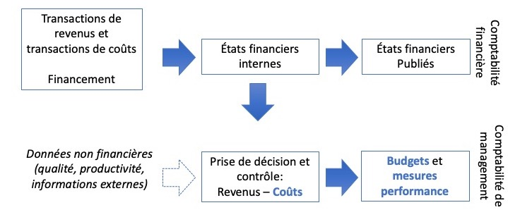
Figure 1: Comptabilité financière et comptabilité de gestion
Ainsi, la comptabilité de gestion "mesure et diffuse – essentiellement en interne – des informations financières et non financières qui ont pour objectif d'aider les gestionnaires à atteindre les buts de l’organisation"2.
En organisation, la comptabilité peut ainsi remplir divers rôles3 :
- Aider à la résolution des problèmes et à la prise de décision (problem-solving) ;
- Orienter l’attention et organiser la vigilance (attention-directing) ;
- Permettre un constat et évaluer la performance (scorekeeping).
Le comptable est généralement responsable de la production de l'information comptable. C'est cependant le gestionnaire qui doit utiliser les calculs du comptable pour prendre des décisions et contrôler. La comptabilité de gestion accompagne donc le gestionnaire au cours des différentes étapes du processus de management : planifier (Plan), réaliser (Do), contrôler et vérifier (Check), et agir et ajuster (Act).
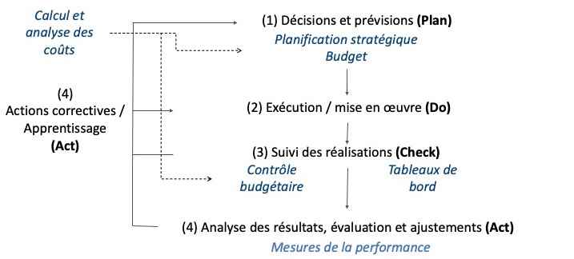
Figure 2: Utiliser la comptabilité de gestion pour planifier, contrôler et ajuster
Pour planifier, il est nécessaire de calculer et analyser les coûts permettant de faire les choix pertinents qui se matérialisent dans les plans stratégiques et de connaître les coûts à inscrire dans les budgets. Le contrôle budgétaire et les tableaux de bord permettent de suivre les réalisations. Grâce aux mesures de performance, il est possible d'analyser les résultats et de faire les ajustements nécessaires au bon fonctionnement de l'organisation.
Contrairement à la comptabilité financière, la comptabilité de gestion n'est pas normalisée. Le vocabulaire, les méthodes et les outils peuvent ainsi varier selon les entreprises. La plus grande difficulté est donc qu'il n'y a pas de méthode universelle qui serait applicable partout. Il n'y a pas de coûts justes ou exacts, il n'y a que des coûts pertinents pour une décision donnée. On utilise donc des calculs de coût différents pour prendre des décisions à court terme ou à long terme. De la même manière, le choix des chiffres à inscrire dans le budget dépend de l'utilisation que l'on va faire de l'outil et les mesures de performances doivent être choisies en pensant aux impacts qu'elles vont avoir sur les comportements.
Les chiffres produits par la comptabilité de gestion reposent sur des hypothèses qui sont souvent discutables. Ils n'ont de valeur que parce qu'ils permettent :
- d'améliorer la prise de décision ;
- de mieux contrôler l'organisation.
La comptabilité de gestion n'est donc pas purement technique. Elle fait partie du processus de management. C'est toute sa difficulté : il faut connaître les outils, mais ne pas s'y limiter.
Ce document vient en complément des diapositives utilisées pour le cours. Il présente les pratiques communément acceptées en comptabilité de gestion, de manière simplifiée et à destination des gestionnaires, afin de vous permettre :
- de discuter avec un comptable en organisation (maîtriser son vocabulaire et comprendre ses méthodes) ;
- d'utiliser l’information produite par le comptable et d'exercer un regard critique sur les outils et procédures qu’il utilise ;
- de maîtriser les techniques de base de calcul des coûts, de construction des budgets ;
- de comprendre les enjeux de la mesure de la performance.
Pour chaque section, vous pouvez faire les exercices disponibles sur ZoneCours et vérifier vos connaissances à l'aide de quiz d’entrainement disponibles à l'adresse suivante : https://www.wooclap.com/COMP50900
Ces quiz sont optionnels et non évalués. Les quiz obligatoires sont disponibles sur ZoneCours.
2 Calcul des coûts et prise de décision
2.1 Les rôles du calcul de coût
Un coût est une somme de charges, il se différencie d'un prix que l'on peut trouver sur un marché. Le coût traduit une consommation de ressources. On considère "qu'il n'y a pas qu'une pratique correcte en matière de calcul de coûts, car celles-ci découlent de besoins variés, de situations et de problèmes différents"4. Le calcul du coût peut en effet remplir différentes fonctions :
- s’interroger sur le prix de vente ;
- abandonner / développer un produit (ou un client) ;
- faire l’examen des composantes du coût (comprendre la performance d’un département) ;
- savoir s’il est plus rentable de faire ou de faire faire ;
- prévoir les dépenses à inscrire au budget ;
- mettre une valeur sur les stocks et produits en cours5.
Dans de nombreuses situations, la connaissance des coûts est donc un élément de base de la prise de décision, même si la connaissance du coût n'est pas un élément suffisant. Elle vient en complément de l'analyse du marché, de l'analyse du processus de production et de l'analyse des risques encourus par l'entreprise.
Selon les décisions à prendre, divers types de calcul des coûts sont envisageables. Par exemple, pour les décisions à court terme on se limitera généralement au calcul de coûts partiels (c'est-à-dire, qui ne prennent en compte qu'une partie des coûts) alors que sur le long terme on appuiera les décisions sur des calculs des coûts complets (qui prennent en compte l'ensemble des coûts). Aucune méthode n'est adaptée à toutes les situations ; la méthode retenue doit être pertinente compte tenu de la décision à prendre.
Avant de se lancer dans un calcul de coûts, il faut se demander quel est l'objectif de ce calcul et bien choisir son objet de coût (élément pour lequel une mesure séparée du coût est nécessaire).
Un objet de coût peut être un produit, un service, un client, une ligne de produits, une fonction, une activité, etc.
Selon les décisions à prendre, il peut être utile de calculer le coût total ou le coût unitaire :
- le coût total est le coût d'un ensemble de produits fabriqués ;
- le coût unitaire est calculé en divisant le coût total par le nombre d'unités.
2.2 Comportement des coûts, calcul des coûts et prise de décision sur le court terme
2.2.1 Distinguer coûts variables et coûts fixes
La plupart des calculs en coûts partiels partent de la distinction entre les charges fixes et les charges variables.
Un coût est dit variable si son montant global varie proportionnellement aux variations du niveau d'activité.
Un coût est dit fixe s'il n'est pas affecté par les variations d'activité (on parle aussi de coût de capacité).
La distinction entre charges variables et charges fixes n'est vraie que pour un horizon de temps donné. Sur le court et le moyen terme, les charges fixes ne peuvent être modifiées, mais sur le long terme elles peuvent évoluer. Par exemple, on peut imaginer acheter une machine ou un nouveau bâtiment.
La distinction entre les coûts fixes – indépendants du niveau d'activité – et les coûts variables – qui évoluent en fonction du volume – permet de définir la fonction de coût :
Coût total = Coût variable unitaire x Quantités + Coûts fixes
Cette fonction de coût modélise la relation entre le volume et les coûts. Elle est notamment utile pour les prévisions et les calculs de seuil de rentabilité.
2.2.2 Marge sur coût variable et marge nette
La marge sur coût variable est souvent utilisée pour évaluer la contribution d'un produit ou d'un service. Elle se calcule de la manière suivante :
Marge sur Coût Variable unitaire = Prix de vente unitaire - Coût variable unitaire
Elle peut être calculée de manière unitaire ou au total pour l'ensemble des unités :
Marge sur Coût Variable totale
= Chiffre d'affaires - Coût variable total
= Quantités vendues x (Prix de vente unitaire - Coût variable unitaire)
Dans la méthode du coût variable, les charges fixes ne sont donc pas imputées au coût des produits. Cette méthode a notamment été introduite afin de mesurer la performance des gestionnaires, qui bien souvent ne peuvent être tenus responsables de coûts fixes qu'ils n'ont pas engagés. Le tableau d'analyse des coûts en marge sur coût variable simple se présente de la manière suivante:
| Produit A | Produit B | Total | |
|---|---|---|---|
| Chiffre d'affaires | CA de A | CA de B | |
| Coûts variables | - CV de A | - CV de B | |
| Marge sur coût variable | = MCV de A | = MCV de B | = MCV de A et B |
| - Charges fixes | |||
| = Résultat |
Pour une synthèse en vidéo, concernant la notion de marge sur coûts variables, voir https://youtu.be/ZzKu-WWayDA
Le calcul de la marge sur coût variable est très utile pour comparer deux propositions qui n'ont pas d'impact sur les coûts fixes. Ce calcul étant très simple, il doit être privilégié lorsque les coûts fixes sont stables.
La marge nette (aussi appelé méthode des coûts spécifiques) traduit la contribution apportée par chaque produit ou service. Le besoin de dépasser la marge sur coût variable simple est venu de l'importance croissante des charges fixes. La maîtrise de ces dernières est sera donc cruciale.
Parmi les coûts fixes, on peut distinguer ceux qui sont spécifiques – que l'on nomme aussi directs parce qu'ils sont facilement attribuables à un objet de coût (par exemple, une machine qui n'est utilisée que par un produit) – de ceux qui sont communs – que l'on nomme aussi indirects car ils ne peuvent être attribués directement aux différents produits et services (par exemple, le système informatique qui est utilisé pour les différents produits ou services de l'entreprise).
Pour calculer les marges nettes, on ne prend en compte que les coûts variables et la part des coûts fixes spécifiques aux produits ou services. L'ensemble des coûts fait ainsi l'objet d'une double segmentation : charges fixes et charges variables, d'une part, et charges directes et charges indirectes, d'autre part.
Le tableau d'analyse des coûts est donc le suivant :
| Produit A | Produit B | Total | |
|---|---|---|---|
| Chiffre d'affaires | CA de A | CA de B | |
| - Coûts variables | - CV de A | - CV de B | |
| = Marge sur coût variable | MCV de A | MCV de B | |
| - Charges fixes directes ou spécifiques | CFS de A | CFS de B | |
| = Marges sur coûts spécifiques (marge nette) | Marge nette de A | Marge nette de B | Marge nette totale |
| - Charges fixes indirectes ou communes | - Charges fixes indirectes | ||
| = Résultat |
Le calcul de la marge nette permet un meilleur diagnostic de la performance des produits que la seule marge sur coût variable, puisque seule une fraction des charges fixes (les charges fixes communes) échappe à l'analyse par produit. Ainsi, les décisions d'abandon ou de maintien d'une activité à l'aide du calcul de la marge nette seront plus aisées qu'en se limitant à la marge sur coût variable.
Pour une synthèse, concernant la notion de marge nette, voir : https://youtu.be/ZLnidu-H6zY
De manière générale, les calculs en coût partiel permettent d'éviter la répartition arbitraire des charges indirectes (nous y reviendrons quand nous parlerons des coûts complets).
Les coûts partiels permettent de prendre de nombreuses décisions. Ils sont notamment utiles pour :
- s'interroger sur le prix optimal (voir Établir le prix de vente en fonction des coûts plus particulièrement de 0 à 1 min 30 : https://youtu.be/gpKK4zIgfLc)
- prendre des décisions lorsque le coût fixe ne change pas. (voir /Les opportunités d'affaires et la notion de pertinence/ : https://youtu.be/tLqI2vId1Sg)
- prendre en compte les coûts d'opportunité, que l'on appelle aussi coût de renonciation (voir /Le coût de renonciation/ : https://youtu.be/1qVlwgbQAcM)
Les coûts partiel donnent cependant une image incomplète du coût d'un produit ou d'un service et de la marge qu'il génère. Parfois, il est nécessaire de calculer un coût complet.
2.2.3 Analyse coûts / volumes / profits : le calcul du seuil de rentabilité
L'une des applications courantes de la distinction entre coûts variables et coûts fixes est le calcul du seuil de rentabilité (ou point mort).
Par définition, le seuil de rentabilité est atteint lorsque le résultat est égal à 0, ce qui signifie que le chiffre d'affaires est équivalent aux coûts :
Chiffre d'affaires = Coût variable unitaire x Quantités + Coûts fixes
Ceci peut se représenter graphiquement de la manière suivante :
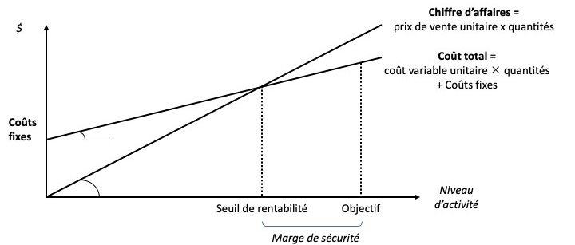
La marge de sécurité est la différence (exprimée en unités ou en unités monétaires) entre le niveau d'activité prévu et le niveau d'activité au point mort.
On peut aussi dire que le seuil de rentabilité est atteint lorsque la marge sur coût variable totale permet de couvrir les coûts fixes.
Ceci peut se représenter graphiquement de la manière suivante :
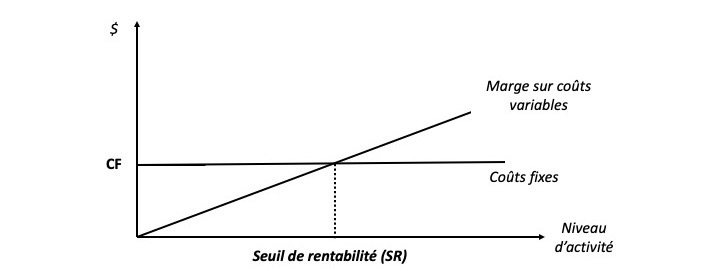
Figure 3: Coût fixe, marge sur coûts variable et seuil de rentabilité
Le seuil de rentabilité se calcule en quantités ou en chiffre d'affaires de la manière suivante :
Seuil de rentabilité en quantités = Coûts fixes ÷ (Marge sur coût variables unitaire)
Seuil de rentabilité en chiffre d'affaires = Coûts fixes / Taux de marge sur coût variable
Démonstration - Formules de calcul du seuil de rentabilité
On peut déterminer le seuil de rentabilité en quantités (que l'on notera Q*) de la manière suivante :
<–> Q* x Prix de vente unitaire = Coût variable unitaire x Q* + Coûts fixes
<–> Q* x (Prix de vente unitaire - Coût variable unitaire) = Coûts fixes
<–> Q* x (Marge sur coût variable unitaire) = Coûts fixes
<–> Q* = Coûts fixes ÷ (Marge sur coût variable unitaire)
On peut déterminer le seuil de rentabilité en chiffre d'affaires (que l'on notera CA*) de la manière suivante :
<–> Marge sur coût variable totale = Coûts fixes
<–> Chiffre d'affaires* x (Marge sur coût variable totale) ÷ CA* = Coûts fixes
<–> CA* x (Marge sur coût variable totale) ÷ CA* = Coûts fixes
On pose (Marge sur coût variable totale) ÷ CA = Taux de marge sur coût variable
<–> CA*= Coûts fixes / Taux de marge sur coût variable
—
Le calcul du seuil de rentabilité est à la fois assez simple et très utile puisqu'il permet de déterminer le volume minimum de vente pour atteindre un résultat nul.
Les exercices ci-dessous permettent de s'exercer au calcul du seuil de rentabilité et de mieux comprendre comment la modélisation en coûts variables permet de choisir entre plusieurs types d'investissements.
Exercice - Entreprise Bertrand
Monsieur Bertrand est chef d'entreprise. Il se demande s'il doit ou non développer le nouveau produit BertMod que son directeur commercial lui présente comme révolutionnaire. Il se tourne vers vous pour savoir s'il doit écouter son directeur commercial, et lancer ce nouveau produit. Pour vous aider dans votre analyse, il vous fait parvenir les données suivantes.
Selon le directeur commercial, l'exploitation de BertMod se ferait aux conditions suivantes :
Matières premières : 10 $ (par produit)
Amortissement de la machine pour la transformation de BertMod : 150 000 $ (par an)
Salaire du personnel : 500 000 $ (par an)
Charges de distribution : 5 $ (par produit)
Prix de vente : 25 $ (par produit)
Travail à faire
1 - Classez les différentes charges du produit BertMod selon qu'elles vous semblent variables ou fixes.
2 - Calculez le seuil de rentabilité en quantité.
3 - Proposez une représentation graphique de ce seuil de rentabilité.
4 - Il semble que les ventes devraient être de 100000 produits pour BertMod. Calculez le résultat attendu grâce au produit BertMod.
5 - Le directeur marketing pense qu'en améliorant la qualité du produit, celui-ci pourrait se vendre 30 $. Ceci nécessiterait l'embauche de 5 personnes en plus pour un coût de 700 000 $ par an (les autres coûts demeurant inchangés). Calculer la quantité qu'il faudrait vendre pour que cette solution soit plus intéressante que celle proposée par le directeur commercial ?
Corrigé
1 -
Charges variables : matières premières et charges de distribution.
Charges fixes : amortissement et salaire
2 -
Marge sur coût variable unitaire = 10 $
Seuil de rentabilité en quantités = 65 000
3 -
100 000 x 10 - 650 000 = 350 000
4 -
Nouvelle marge sur coût variable unitaire = 15 $
15 x Q - 1 350 000 > 350 000
Q* > 1133333
—
Exercice - IsoGreen
L'entreprise IsoGreen s’interroge sur l’opportunité de produire des contenants isothermes recyclables. Les études de marché suggèrent que 500 000 contenants pourraient être vendus annuellement.
Il est prévu que ces contenants aient la structure de coût suivante, pour un volume de vente de 500 000 unités. Les prix et coûts attendus pour les isothermes recyclables sont donnés dans le tableau ci-dessous :
| Prix de vente | 30,00 $ |
| Coûts unitaires | |
| Coût de main d’œuvre directe variable | 1,50 $ |
| Autres coûts de production variables | 19,50 $ |
| Coûts fixes de machines | 4 $ |
| Salaires (fixes) | 1,60 $ |
| Autres coûts fixes | 1,60 $ |
Travail à faire
- Calculer le seuil de rentabilité (a) en unités et (b) en chiffre d’affaires.
- Calculer le résultat si 500 000 unités sont vendues.
- Un investissement de productivité qui se traduirait par des coûts fixes annuels supplémentaires de production de 810 000 $ est envisagé. Celui-ci permettrait d’automatiser la production et de supprimer les coûts variables de main d’œuvre. Si cet investissement est réalisé, quel serait le nouveau seuil de rentabilité (a) en unités et (b) en chiffre d’affaires ?
- Calculer le nombre d’unités qui doivent être vendues annuellement pour que les solutions avec investissement de productivité et sans l’investissement de productivité soient équivalentes. Donner le détail des calculs.
- Recommanderiez-vous l’investissement de productivité supplémentaire ? Justifiez votre réponse.
Corrigé
1 -
Marge sur coût variable unitaire = 30 - 21 = 9
Coût fixe total = 500 000 x (4 + 1,6 + 1,6) = 3 600 000
Seuil de rentabilité en quantité = 3 600 000 / 9 = 400 000
Taux de marge sur coût variable = 9 / 30 = 0,3
Seuil de rentabilité en chiffre d'affaires = 3 600 000 / 0,3 = 12 000 000 (c'est aussi égal à 400 000 x 30)
2 -
Résultat = 500 000 x 9 - 3 600 000 = 900 000
3 -
Nouvelle marge sur coût variable unitaire = 9 + 1,5 = 10,5 (on supprime les coûts variables de main d'oeuvre)
Nouveaux coûts fixes totaux = 3 600 000 + 810 000 = 4 410 000
Seuil de rentabilité en quantité = 4 410 000 / 10,5 = 420 000
Taux de marge sur coût variable = 10,5 / 30 = 0,35
Seuil de rentabilité en chiffre d'affaires = 4 410 000 / 0,35 = 12 600 000
4 -
Résultat sans investissement = 9 X - 3 600 000
Résultat avec investissement = 10,5 X - 4 410 000
Le niveau de vente pour lequel les deux solutions sont égales est atteint lorsque
9 X - 3 600 000 = 10,5 X - 4 410 000
<–> 810 000 = 1,5 X
<–> 810 000 / 1,5 = 540 000
5 -
Au-dessus de 540 000 ventes, l'investissement est rentable
On pense faire 500 000 ventes, il n'est donc pas intéressant de faire l'investissement
—
Le seuil de rentabilité est ainsi extrêmement utile pour faire un calcul simple visant à s'interroger sur la pertinence d'un investissement. Des notions de finance plus élaborées peuvent cependant être utilisées, comme la valeur actuelle nette.
Pour vous exercer sur cette section, voir les exercices sur ZoneCours et le quiz d'entrainement : https://app.wooclap.com/COMP50900/questionnaires/5f6897932655921192ee504c
2.3 Gestion des coûts et prise de décision sur le long terme
2.3.1 Le concept de coût complet
Un calcul de coût est dit complet s'il prend en compte l'ensemble des charges considérées comme incorporables (qu'elles soient variables, fixes, directes ou indirectes) pour les imputer aux objets de coûts. Les méthodes présentées par la suite s'appliquent à tout "objet de coût" (un produit, un service, un client, etc.), mais simplifier la formulation on parlera par la suite de "produit".
Établir le coût complet d'un produit consiste à chercher à valoriser l'ensemble des ressources consommées par ce produit. Un coût complet se calcule donc de la manière suivante :
Coût complet = ∑ des charges directes + quote-part des charges indirectes.
Les charges indirectes sont les charges que l'on ne peut affecter sans ambiguïté à un produit. Par exemple, les coûts d'une machine utilisée par plusieurs produits, des frais de la direction générale, des coûts de transports communs à plusieurs produits sont des charges indirectes. Toute la difficulté vient de la nécessité, pour calculer un coût complet, de rattacher ces charges à un produit.
2.3.2 Les étapes de calcul du coût de revient complet
Une fois qu'un objet de coût est défini, on peut synthétiser le calcul du coût complet en 4 étapes :
- Étape 1. Classement des charges en charges directes et indirectes
L'ensemble des charges de la comptabilité financière doit être pris en compte à l'exception des charges qui ne reflètent pas les conditions normales d'une exploitation régulière de l'entreprise (par exemple, les charges ou pertes exceptionnelles, les amortissements dérogatoires, etc.). Le total des charges incorporables est classé en charges directes (affectables sans ambiguïté à un produit) et charges indirectes.
- Étape 2. Affectation des charges indirectes aux centres de regroupement
À cette étape, il est nécessaire d'affecter l'ensemble des charges indirectes à ce que l'on appelle des centres de regroupement, qui sont des entités comptables dans lesquelles on regroupe les charges indirectes qui se ressemblent6.
Un centre de regroupement est un "compartiment comptable" incluant des activités homogènes technologiquement distinctes des activités des autres centres. Dans la pratique, les centres de regroupement correspondent souvent aux différents services, départements ou ateliers mais si l'on y effectue des tâches technologiquement distinctes, il est nécessaire de définir plusieurs centres pour s'assurer de l'homogénéité des charges regroupées au sein du centre. Les coûts du centre sont dits homogènes s'ils forment un ensemble stable et solidaire, c'est-à-dire si chaque fois que l'activité est déclenchée, les tâches élémentaires qu'elle comporte sont toutes effectuées et si chacune de ses tâches est exécutée de manière stable. Autrement dit, quel que soit le produit, celui-ci doit consommer toutes les tâches dans les mêmes proportions.
Quelques principes doivent être pris en compte lors de la définition des centres : 1/ la liste des centres doit être exhaustive ; 2/ les centres doivent s'exclure mutuellement ; 3/ Il doit être possible d'attribuer à chaque centre de regroupement ses charges. On remarquera que plus le nombre de centres est élevé, plus le coût de saisie et de traitement est élevé, mais plus les centres ont des chances de présenter une activité homogène mesurable.
- Étape 3. Regroupement en fonction des bases d’imputation et calcul des taux d’imputation
Lorsque les centres de regroupement sont déterminés, on cherche à répartir le coût des centres dans les produits. Pour pouvoir le faire, il est nécessaire de calculer un taux d'imputation. Pour simplifier, il est possible de regrouper les centres ayant des bases d'imputation identiques, avant de calculer les taux d'imputation.
La base d'imputation est l'unité de mesure de l'activité d'un centre, elle modélise les coûts de ce centre. Elle doit être choisie de manière à être la plus représentative possible du travail effectué par le centre et à traduire les variations de son activité. Souvent elle correspond au principal facteur de production utilisé par le centre (la main d'œuvre, l'heure machine, le nombre de lots, etc.).
Le choix de la base d'imputation est déterminant, car les bases d'imputation permettent d'opérer les transferts de coûts vers les objets de coût. Une bonne base d'imputation est celle pour laquelle une corrélation satisfaisante est observée avec le coût du centre.
Le taux d'imputation est obtenu en divisant les totaux issus de la répartition secondaire par le volume de la base d'imputation.
Les étapes 2 et 3 doivent être menées en réalisant un tableau de répartition des charges indirectes. Le tableau de répartition des charges indirectes se présente de la manière suivante :
| Charges indirectes | Centre de regroupement 1 | Centre 2 | Centre 3 |
|---|---|---|---|
| Charges indirectes consommées par le centre | Total de toutes les ressources consommées par le centre. Attention, ici on se limite aux charges indirectes. | (1) | xxx |
| Base d'imputation | Choix d'une base d'imputation caractéristique de l'activité du centre (par exemple, les heures machine, le nombre de lots, etc.) | xxx | |
| Base d'imputation en volume | Calcul du volume de la base d'imputation. Par exemple, si on choisit les heures machines, on calcule le total des heures machines pour tous les produits | (2) | xxx |
| Taux d'imputation | Le taux d'imputation est obtenu en divisant les ressources consommées par la base d'imputation | (1) ÷ (2) | xxx |
Le tableau comprend autant de colonnes que le nombre de centres de regroupement.
Le tableau de répartition des charges indirectes est une étape indispensable du calcul du coût complet. Dans les situations simples, on peut être tenté de se passer de cette étape en affectant directement les charges indirectes, sans passer par cette étape intermédiaire. Cependant, en faisant cela, on multiplie les possibilités d'erreur. De plus, on ne rend pas disponible une information importante sur ce que nous coûte chacune des opérations en termes de charges indirectes.
- Étape 4. Imputation des charges directes et indirectes aux objets de coût
Les charges directes concernent souvent (mais pas seulement et pas toujours) des charges de main-d'œuvre et les charges de matière première. Elles peuvent être directement, et sans calcul, affectées aux produits.
L'affectation des charges indirectes aux objets de coût se fait par l'intermédiaire des taux d'imputation.
L'étape 4, qui permet le calcul du coût complet et du résultat en coût complet pour chaque produit doit être réalisé à l'aide d'un tableau qui prend la forme suivante :
| Produit 1 | Produit 2 | Produit 3 | |
|---|---|---|---|
| Charges directes | Une ligne pour chaque type de charge directe. Par exemple, la main d'oeuvre directe, les matières premières, etc. | Quantités x coût unitaire = (1) | xxx |
| Charges indirectes | Une ligne pour chaque centre. Par exemple, centre de regroupement assemblage, livraison, etc. Pour affecter les charges indirectes, on multiplie la base d'imputation (en l'adaptant aux quantités consommées par le produit) par le taux d'imputation. | Volumme d'imputation pour le produit x taux d'imputation = (2) | xxx |
| Coût complet | = (1) + (2) | xxx |
Dans le tableau, il doit y avoir une colonne pour chaque produit. Le volume d'imputation correspond à ce qui est consommé par le produit. Par exemple, si la base d'imputation est l'heure machine, qu'un produit donné consomme 2 heures machines et qu'on produit 100 unités de ce produit. Le volume d'imputation est de 100 x 2. Autre exemple, si la base d'imputation est le nombre de lots mis en production et que pour un produit donné, il y a 50 lots mis en production, le volume d'imputation est de 50.
La méthode des coûts complets peut être utilisée pour calculer le coût de produits ou de services, comme le montre l'exemple ci-dessous :
Exercice - Calcul du coût des clients dans un cabinet comptable
Un cabinet comptable de taille moyenne possède un portefeuille d'une centaine de clients, répartis dans 3 secteurs d'activité :
- coiffeurs : 60 clients (secteur "C"),
- restaurateurs : 30 clients (secteur "R"),
- garagistes : 10 clients (secteur "G").
Toutes les données comptables qui suivent sont en dollars. Pour la période N, les honoraires payés par les clients se répartissent ainsi :
- secteur C : 180 000
- secteur R : 90 000
- secteur G : 30 000
Les charges comprennent essentiellement des frais de personnel, pour un montant total de 210 000. Une partie des charges de personnel est considérée comme "directe", et correspond aux heures des collaborateurs passées en clientèle. La répartition des charges directes est la suivante :
- secteur C : 66 000
- secteur R : 34 000
- secteur G : 10 000
Le reste des charges de personnel concerne deux centres : l'administration générale pour 50 000 et l'informatique pour 50 000 également.
Il existe aussi d'autres charges indirectes diverses pour 50 000. Celles-ci concernent l'administration générale (10 000) et l'informatique (40 000).
Les bases d'imputation suivantes ont été choisies :
- nombre de clients pour les charges indirectes d'administration générale du cabinet
- chiffres d'affaires pour les charges indirectes d'informatique
Travail à faire
Calculer les résultats par secteur de clientèle
Corrigé
Ce calcul passe par la construction de deux tableaux : le tableau de répartition des charges indirectes et le tableau de calcul des résultats.
| Tab. de répartition des charges indirectes | Admin. générale du cabinet | Informatique |
|---|---|---|
| Charges de personnel indirectes | 50 000 | 50 000 |
| Autres charges indirectes | 10 000 | 40 000 |
| Total des charges indirectes | 60 000 | 90 000 |
| Base d'imputation (1) | nombre de clients | chiffre d'affaires |
| Volume de la base d'imputation (2) | 100 | 300 000 |
| Taux d'imputation (1) / (2) | 600 | 0,3 |
Lorsque les taux d'imputation sont calculés, il est possible de calculer le coût complet et le résultat.
| Calcul des résultats | Total | Secteur C | Secteur R | Secteur G |
|---|---|---|---|---|
| Chiffre d'affaires (1) | 300 000 | 180 000 | 90 000 | 30 000 |
| Charges de personnel directes | 110 000 | 66 000 | 34 000 | 10 000 |
| Charges indirectes | ||||
| administration | 36 000 (1) | 18 000 | 6 000 | |
| informatique | 54 000 (2) | 27 000 | 9 000 | |
| Coût complet (2) | 156 000 | 79 000 | 25 000 | |
| Résultats (1) - (2) | +40 000 | +24 000 | +11 000 | +5 000 |
| Taux de marge | 13,3 % | 12,2 % | 16,7 % |
(1) 60 x 600 ; (2) 180 000 x 0,3
Le secteur G est celui qui a le meilleur taux marge.
—
2.3.3 Conditions de validité de la méthode : Homogénéité des centres de regroupement et choix des bases d'imputation
La méthode de calcul du coût complet repose sur une technique de calcul. Cependant, préalablement à la mise en œuvre de cette technique, il faut faire deux choix : le découpage en centres de regroupement et le choix des bases d'imputation. Le choix des centres et des bases d'imputation détermine la qualité du calcul du coût réalisé. Si ces choix sont mal faits, c'est toute la pertinence de la répartition des charges indirectes, et donc du calcul des coûts, qui est remise en cause. Il est donc indispensable de choisir des centres qui sont homogènes et des bases d'imputation qui reflètent le niveau d'activité du centre sous peine de calculer des coûts qui n'ont pas de sens.
- Découpage en centres de regroupement
Un centre de regroupement est un "compartiment comptable" regroupant des activités homogènes technologiquement distinctes des activités des autres centres. Dans la pratique, les centres de regroupement correspondent souvent aux différents services ou ateliers mais si on effectue des tâches technologiquement distinctes, il est nécessaire de définir plusieurs centres ou sections pour s'assurer de l'homogénéité des coûts qui composent le centre.
Les coûts du centre sont dits homogènes s'ils forment un ensemble stable et solidaire c'est-à-dire si chaque fois que l'activité est déclenchée, les tâches élémentaires qu'elle comporte sont toutes effectuées et si chacune de ses tâches est exécutée de manière stable7. Autrement dit, quel que soit le produit, celui-ci doit consommer toutes les tâches dans les mêmes proportions.
Exemple - Découpage des centres de regroupement et homogénéité
On décide de regrouper au sein d'un même centre de regroupement deux tâches : une tache de fabrication et une tâche de montage. Il existe deux produits dans l'entreprise P1 et P2.
| P1 | P2 | |
|---|---|---|
| Minutes de fabrication | 1 | 5 |
| Minutes de montage | 2 | 10 |
Dans ce cas, il y a bien homogénéité des coûts regroupés au sein du centre car P1 et P2 consomment les deux activités et car P2 consomme 5 fois plus de minutes que P1 pour les deux tâches regroupées dans le
centre de regroupement. Le regroupement de ces deux tâches dans un même centre de regroupement est donc pertinent.
En revanche dans le cas suivant, il n'y a pas homogénéité, puisque P2 consomme deux fois moins de minutes de fabrication que P1 et 5 fois plus de minutes de montage que P1.
| P1 | P2 | |
|---|---|---|
| Minutes de fabrication | 2 | 1 |
| Minutes de montage | 2 | 10 |
Le regroupement de ces deux tâches dans un même centre de regroupement n'est pas pertinent.
—
Dans la pratique, un dilemme se pose entre la tentation de multiplier les centres de regroupement (pour s'assurer de l'homogénéité des coûts au sein du centre) et le coût de la collecte et du traitement de
l'information (qui augmente avec le nombre de centres de regroupement).
Il faudra donc limiter le nombre de centres de regroupement à ce qui est réellement nécessaire.
- Choix des bases d'imputation
La base d'imputation doit permettre de répartir les charges indirectes entre les produits qui la consomment : elle représente et modélise l'activité d'un centre de regroupement. Une bonne base d'imputation est celle pour laquelle une corrélation satisfaisante est observée entre le coût du centre et le volume de la base d'imputation. C'est-à-dire que, sur le long terme, le volume de la base d'imputation et les coûts du centre de regroupement doivent évoluer de manière proportionnelle.
Exemple - Choix des bases d'imputation
| N | N+1 | N+2 | N+3 | |
|---|---|---|---|---|
| Volume de base d'imputation | 10 | 11 | 13 | 13 |
| Coûts du centre de regroupement | 200 | 220 | 260 | 260 |
On voit ici que le volume de la base d'imputation et les coûts du centre évoluent à peu près de manière proportionnelle : la base d'imputation est bien choisie.
En revanche, dans le cas ci-dessous il faudrait trouver une autre base d'imputation :
| N | N+1 | N+2 | N+3 | |
|---|---|---|---|---|
| Volume de base d'imputation | 10 | 11 | 13 | 13 |
| Taux d'imputation | 250 | 220 | 190 | 400 |
—
Selon les choix faits, des résultats très différents pourront être trouvés. Des produits ou des clients pourront apparaître comme bénéficiaires avec une méthode alors qu'ils sont déficitaires avec une autre méthode. Il est donc nécessaire de faire ces choix avec circonspection.
Traditionnellement, la comptabilité a apporté une grande importance aux activités volumiques, c'est-à-dire qui sont liés aux quantités produites et vendues (par ex, les charges indirectes de production liées aux heures de machine ou de main d’œuvre directe). Il est cependant important de prendre aussi en compte les activités non volumiques, c'est-à-dire qui ne sont pas directement reliées aux quantités produites et vendues (ex: contrôle qualité, manutention, conception des produits qui dépendent du nombre de lots ou du nombre de modèles).
Ainsi, les bases d’imputation ne doivent pas être uniquement volumiques si les coût indirects non reliés aux volumes représentent un part importante des charges indirectes.
2.3.4 Du calcul du coût à la gestion des coûts : la méthode par activité
Différentes critiques peuvent être faites aux démarches de calcul de coûts complets :
- Les comportements de coûts n'apparaissent pas clairement en ne permettant pas la distinction entre les charges fixes et les charges variables. En particulier pour ces dernières, cette méthode ne permet pas de connaître leur mode de variation (linéaire, exponentiel, etc.) et les causes de celui-ci (par rapport à quelle(s) base(s) d'imputation elles varient).
- La distinction entre charges directes et indirectes est peu aisée. Tout au plus, on peut dire que "les charges directes sont celles que l'on peut affecter en totalité, sans calcul préalable, à un produit ou une activité déterminée selon le critère d'analyse choisi. Les autres charges, communes à plusieurs produits ou activités, sont dites indirectes"8.
- La collecte et le traitement des informations nécessaires au calcul des coûts peuvent entrainer des opérations longues et coûteuses.
- Les coûts de revient obtenus peuvent sembler être le reflet de choix "administratifs et comptables" et donc artificiels.
En effet, dans de nombreuses entreprises, les centres de regroupement retenus sont essentiellement le reflet de l'organisation hiérarchique de l'entreprise. Cette façon de faire a été critiquée, notamment par Johnson et Kaplan9, parce que les charges directes (particulièrement la main d'oeuvre directe) décroissent, pendant que les charges indirectes prennent une part de plus en plus importante des coûts de production dans les usines (mais aussi dans les industries de services, avec les coûts des systèmes TI, par exemple). Dans ce contexte, la répartition des charges indirectes doit refléter de manière correcte la consommation des ressources par les différents produits, sinon le calcul des coûts donne une mauvaise représentation de la performance des différents produits.
Pour bien prendre en compte la consommation des ressources, il faudrait donc s'appuyer sur une représentation qui part des processus de l'entreprise, afin de donner une représentation plus fidèle de la consommation de ressources que la représentation hiérarchique. La méthode de calcul des coûts par activité s'appuie ainsi sur la chaîne de valeur10, qui représente l'ensemble des activités (primaires et de soutien) qu'une entreprise doit réaliser afin de satisfaire ses clients.
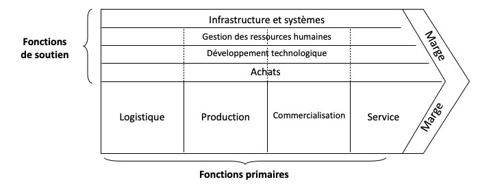
Figure 4: La chaîne de valeur (Porter, 1985)
La mise en oeuvre des calculs de coût par activité n'est pas fondamentalement différente de la méthode classique des calculs de coût complet examinée plus haut. Elle repose cependant, une logique différente, un vocabulaire spécifique (activités à la place de centres de regroupement, inducteurs à la place de base d'imputation) et une représentation processuelle de l’entreprise plutôt que hiérarchique.
Dans la méthode des coûts par activités, on considère que les produits déclenchent des activités, qui elles-mêmes consomment des ressources.
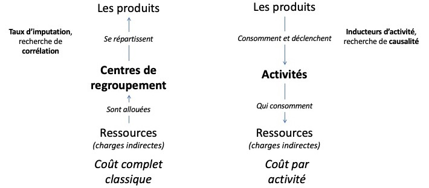
Figure 5: Calcul des coûts complets - Méthode traditionnelle vs coût par activité
Pour pouvoir calculer un coût, il faut donc mettre en évidence :
- les activités, que l'on peut définir comme un ensemble de travaux, tâches ou opérations à accomplir pour mener à bien le processus ;
- les inducteurs d'activité, qui sont les évènements déclencheurs de ces activités.
Activités
Exemples d'activités pour des entreprises de service : facturation des clients, réponse à un appel d’offre, vérification du crédit d’un client
Exemples d'activités pour des entreprises de fabrication : manipulation des matières premières, contrôle de la qualité, définition des spécifications de conception
L'inducteur d'activité est ainsi l'unité de mesure qui rend compte du comportement du coût de l’activité. Plutôt qu'une corrélation, comme dans la méthode classique, on recherche une causalité, c'est-à-dire ce qui déclenche les activités et donc les coûts. On fait l'hypothèse qu'il y a un lien de causalité entre le coût d’une activité et sa consommation par un objet de coût.
Cet inducteur peut refléter le volume de production (heures de main d'oeuvre, heure de machine), le nombre de lots (nombre de contrôles qualité, nombre de livraisons), ou même le nombre de modèles (par exemple, pour les coûts liés à la conception).
Techniquement, il faut respecter les mêmes étapes que dans la méthode classique du coût complet pour calculer un coût par activité :
- identification des activités et allocation des ressources aux activités ;
- détermination des inducteurs d’activité et regroupement des activités ayant les mêmes inducteurs ;
- calcul du coût des inducteurs d’activité (dans un tableau spécifique permettant de calculer le coût des inducteurs, similaire au tableau de répartition des charges indirectes) ;
- calcul du coût complet des objets de coût en imputant les charges directes et indirectes (grâce aux inducteurs).
Le principal intérêt de cette méthode est de rappeler que calculer des coûts ce n’est pas forcément gérer les coûts. Pour gérer les coûts, il faut :
- optimiser les activités
- identifier les activités qui génèrent de la valeur et faire l’inventaire des activités sans valeur ajoutée
- identifier les gaspillages (activité fragmentée, désordonnée, ou coûteuse)
- identifier les inducteurs d’activité (ce qui déclenche les activités) et limiter les déclenchements d’activité.
On peut ainsi gérer un coût, sans le connaître précisément, si on a une bonne représentation des inducteurs d'activité.
Pour vous exercer sur cette section, voir les exercices sur ZoneCours et le quiz d'entrainement : https://app.wooclap.com/COMP50900/questionnaires/5f6898aee60d387141539337
2.4 Quel coût pour quelle décision ?
Les différentes méthodes de calcul de coût ne permettent pas de prendre les mêmes types de décisions.
Le calcul du coût complet de ce que consomme un produit, directement ou indirectement, en raison des capacités qu'il exige de mobiliser est un élément fondamental de la prise de décision sur le long terme. Celui-ci associe à un produit ses coûts de capacité et ses coûts variables, directs et indirects. On peut alors déterminer le résultat comptable de ce produit, bénéfice ou perte. Un tel calcul est essentiel lors des décisions de lancement ou de retrait d'une production. Il peut être utile également lors de la fixation du prix de vente d'un produit (si le marché est offreur). Il faudra cependant rester prudent en cas d'arrêt d'un produit dont le résultat en coût complet est négatif : cela peut conduire à une détérioration du résultat de l'entreprise s'il n'est pas possible de couvrir les coûts fixes autrement.
Exemple - Dans quel cas faut-il arrêter un produit ?
Prendre la décision d'arrêter un produit dont la marge sur coût complet est négative peut conduire à une détérioration du résultat global de l'entreprise. En effet, les charges indirectes imputées au produit déficitaire ne disparaissent pas lorsque l'on supprime le produit.
Par exemple, une entreprise vend 3 produits.
| P1 | P2 | P3 | Total | |
|---|---|---|---|---|
| CA | 100 | 50 | 90 | |
| Charges directes | 50 | 30 | 50 | |
| Charges indirectes (total = 90) | 30 | 30 | 30 | |
| Résultat | 20 | -10 | 10 | 20 |
P2 a une marge sur coûts complets négative. L'entreprise décide donc d'en arrêter la production et la vente.
Après suppression de P2, le résultat est diminué de 20 à 0 et P3 est devenu déficitaire.
| P1 | P3 | Total | |
|---|---|---|---|
| CA | 100 | 90 | |
| Charges directes | 50 | 50 | |
| Charges indirectes (total = 90) | 45 | 45 | |
| Résultat | 5 | -5 | 0 |
Les charges indirectes n'ont pas été supprimées avec la disparition de P2. Elles ont été réparties sur les autres produits ce qui a conduit à diminuer leurs marges et donc à diminuer le résultat de l'entreprise.
—
Lorsque l'on supprime un produit déficitaire, on ne supprime pas les charges indirectes qui lui sont associées. Il est même parfois difficile de supprimer les charges fixes directes (aussi appelées coûts spécifiques) qui lui sont associées.
En revanche, lorsque la marge sur coût variable d'un produit est négative. Alors, il est évident qu'en arrêtant la production du produit le résultat de l'entreprise s'améliore.
Avant d'arrêter un produit, à partir de critères financiers, il faut s'assurer que les coûts fixes spécifiques de ce produit pourront être supprimés et que les charges fixes indirectes pourront être absorbées par les autres produits.
Le calcul récurrent (tous les mois, par exemple) du coût complet est la plupart du temps irréaliste (son calcul est complexe) et de peu d'intérêt si aucun choix décisif n'est en jeu.
Par opposition, les calculs de coûts partiels ne cherchent à associer à un produit (ou à tout autre objet de calcul de coût) que certains des coûts qui lui reviennent, parce que l'analyse effectuée focalise sur un aspect particulier. Ainsi, la méthode du coût variable impute à un produit ses seuls coûts variables. On détermine donc pour le produit une marge sur coût variable et non plus un résultat. La somme de ces marges doit couvrir les coûts de capacité pour dégager un bénéfice.
Cette approche, qui renonce à analyser les coûts fixes, n'est a priori pertinente que pour les décisions qui les laissent inchangés. Elle a l'avantage d'éviter les répartitions arbitraires de charges indirectes.
La méthode de calcul des coûts retenue doit être pertinente pour la décision à prendre. La pertinence des calculs de coûts dépend d'abord de l'identification des décisions auxquelles on destine les chiffres : il n'y a pas de calcul de coût indépendamment d'une utilisation donnée du résultat de ce calcul.
3 Planification et animation budgétaire
3.1 La planification budgétaire
Le budget est la traduction comptable des plans d'action retenus pour l'année à venir. Il devrait aussi être la déclinaison annuelle des stratégies. Il articule ainsi le court terme (le mensuel et l'annuel) et le moyen terme (l'annuel et le pluriannuel). C'est d'abord un outil de prévision.
Il permet ensuite un contrôle budgétaire grâce au calcul des écarts entre ce qui se produit et ce qui avait été prévu (le réel). Chaque écart peut être affecté à un service, permettant ainsi d'identifier les sources des inefficiences. Il peut donc être utilisé pour évaluer la performance des managers.
Dans la pratique, un budget est défini pour chaque fonction de l'entreprise. Il est nécessaire de commencer la construction des budgets par les contraintes les plus fortes. Dans une économie de l'offre (par exemple, aujourd'hui dans quelques entreprises proposant des innovations technologiques ayant un succès tel qu'elles n'arrivent pas à répondre à la demande), la principale contrainte vient des capacités de production puisque les entreprises n'arrivent pas à satisfaire la demande. Dans ce cas, il faut construire en premier lieu le budget de production.
Dans une entreprise familiale, qui a des problèmes de financement, la trésorerie constitue la principale contrainte : c'est par ce budget qu'il faudra débuter. Dans une économie de la demande, la marche de l'entreprise est essentiellement contrainte par la demande du marché. Dans ce cas, il faut commencer par établir le budget des ventes. C'est le cas le plus courant, et c'est celui que nous développerons par la suite.
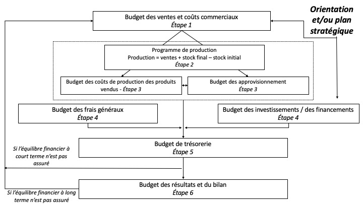
Figure 6: Les étapes du processus budgétaire
Le schéma ci-dessus synthétise les différentes étapes du processus budgétaire dans le cas classique d'abondance de l'offre. Le premier budget qui doit être réalisé est le budget des ventes (étape 1), qui dépend notamment de la stratégie et du plan (étape 0), mais qui doit être ajusté en fonction des évolutions récentes du marché. Ensuite, le programme de production, aussi appelé plan d'activité, qui permet de définir les quantités à produire et les modalités de production doit être établi (étape 2). Sur la base de programme de production, il est possible de construire le budget des coûts de production et des coûts d'approvisionnement (étape 3). Le budget des investissements et le budget des frais généraux (frais de la direction générale, par exemple) sont des budgets discrétionnaires (étape 4). Ils ne dépendent pas directement du niveau d'activité, mais doivent permettre de la soutenir. Le niveau de dépense dans ces domaines doit donc être défini en fonction de l'orientation stratégique de l'entreprise et du niveau de rentabilité attendu.
Ces différents budgets sont ensuite rassemblés pour construire le budget de trésorerie (étape 5) ainsi que le compte de résultat et le bilan prévisionnel (étape 6).
Le processus budgétaire est adapté au type d'activité de l'entreprise. Ici l'exemple d'une entreprise spécialisée dans la vente de détail :
https://youtu.be/Wbqrj7UfhmI
Si le budget de trésorerie (ou budget de caisse) fait apparaître des besoins de financement auxquels l'entreprise ne peut pas faire face ou si le compte de résultat prévisionnel fait apparaître une rentabilité trop faible, le niveau des ventes doit, dans la mesure de ce qui peut être vendu sur le marché par l'entreprise, être modifié. Le budget est donc un outil fondamental en phase de prévision puisqu'il permet de tester la faisabilité de la stratégie en ce qui concerne les besoins de trésorerie sur le court terme et d'évaluer l'impact de cette stratégie sur le résultat et la rentabilité économique de l'activité.
La démarche budgétaire est initiée par les comptables. Ils sont les garants de la procédure budgétaire. Les comptables fournissent le cadre budgétaire permettant de collecter les données, ils collectent les données primaires et organisent les réunions budgétaires permettant la confrontation des points de vue.
Mais, la construction budgétaire va aussi impliquer, le plus souvent, les gestionnaires. En effet, la construction du budget implique le recueil de données internes (capacités de production, coûts, chiffre d'affaires prévisionnel) et externes (conjoncture économique et évolution du marché). Il faut aussi que le budget prenne en compte les préoccupations stratégiques de l'entreprise et qu'il soit en phase avec les réalités opérationnelles de l'entreprise. La participation des gestionnaires est donc nécessaire pour recueillir ces différentes informations. Ils fournissent les données, questionnent les hypothèses budgétaires et les dirigeants arbitrent sur les grands choix à réaliser.
La construction du budget est donc souvent un long processus qui implique de nombreux acteurs dans l'entreprise, au-delà des comptables
3.2 Les budgets fonctionnels
Les différentes fonctions rencontrent des enjeux différents dans la construction de leurs budgets.
3.2.1 Le budget des ventes et des coûts commerciaux
Le budget des ventes est en général le premier budget qui doit être construit. Sa construction implique de faire des choix sur les quantités vendues pour chaque produit ainsi que sur les prix de vente. Si l'entreprise réalise des ventes à l'international, cette prévision suppose de faire aussi des hypothèses sur le taux de change. Ceci implique de prendre en compte les facteurs macro-économiques, l'évolution de la réglementation, le comportement des concurrents et l'évolution de la demande des consommateurs.
Lors de cette étape, la participation des vendeurs, des experts en marketing et chefs de produits est évidemment déterminante. Ce sont d'abord eux qui connaissent les produits et les marchés et qui ont la capacité de proposer des prévisions fiables. Ils s'appuient dans certains cas sur des études de conjoncture et des études sectorielles pour faire ces prévisions. Lorsque le marché est en croissance constante, il est possible de faire appel à des techniques statistiques et de réaliser une extrapolation linéaire à partir des années précédentes.
Bien souvent, l'estimation des ventes se fait en reconduisant les réalisations de l'année N+1 plus ou moins un pourcentage qui correspond à la tendance générale du marché. C'est une méthode rapide, mais qui semble peu adéquate pour faire des prévisions sérieuses.
Pour les entreprises qui ont une activité avec peu de clients (par exemple : les entreprises de la construction, un artisan plombier, un constructeur d'avions, une entreprise de gardiennage) la prévision peut se faire à partir du portefeuille de commandes et en évaluant le nombre de clients gagnés et perdus.
À partir de ce budget des ventes, il est possible de faire le budget des coûts commerciaux. Le budget des coûts commerciaux peut être divisé par type d'activités : administration de la vente (gestion des clients, facturation), marketing (études commerciales, publicité, promotion), vente (salaires et coût des représentants), livraisons (emballages, expéditions), service après-vente.
3.2.2 Le budget des coûts de production
Cette étape peut se décomposer en quatre temps :
- définition du programme de production ;
- calcul de l'utilisation prévisionnelle des moyens ;
- calcul des capacités de production disponible pour chaque facteur et comparaison avec l'utilisation prévisionnelle des moyens ;
- la valorisation du programme de production retenu.
Dans un premier temps, il est nécessaire de définir le programme de production nécessaire compte tenu du niveau des ventes espérées et du niveau de stock désiré. La production doit permettre de couvrir les ventes prévues et le stock final désiré, compte tenu du stock initial.
Production = ventes + stock final désiré - stock initial
Lorsque le niveau des ventes n'est pas uniforme toute l'année, il est nécessaire d'établir le niveau de production nécessaire sur une période plus courte (le trimestre, le mois, le jour, ou toute autre période adaptée aux variations de l'activité). Selon la politique retenue par l'entreprise, le niveau des stocks ou le niveau de la production (notamment si l'entreprise a une politique de production en juste à temps) devront varier en fonction du niveau des ventes.
Une fois le niveau de production choisi, il est possible de préciser l'utilisation prévisionnelle des moyens concernant : les consommations prévisionnelles de matières, la main d'œuvre productive nécessaire et le degré d'utilisation des équipements. Cette utilisation prévisionnelle des moyens doit prendre en compte les rebuts, les défauts de qualité et les temps impayés.
Pour chaque facteur de production, il est nécessaire de vérifier que les capacités de production sont supérieures ou égales aux besoins de production. Lorsque cela n'est pas le cas, deux décisions sont possibles : accroître les capacités de production en faisant des investissements ou limiter les ventes en optimisant l'utilisation du facteur rare (c'est-à-dire en utilisant au mieux le facteur de production qui limite le niveau de production). Dans le court terme, seule la seconde solution est bien souvent envisageable.
Le budget de production est la valorisation du programme de production. Cette valorisation repose sur les calculs de coût complet effectués à l'aide des méthodes de comptabilité de gestion. Elle suppose la prise en compte des coûts variables (matières premières, fournitures, énergies, etc.) et fixes (amortissement des machines, main d'œuvre, etc.) qu'ils soient directs ou indirects. Les frais indirects de production sont inscrits dans les budgets en fonction de la base d'imputation retenue (critère utilisé pour répartir les frais généraux, par exemple le nombre de produits, le volume de travail, etc.) et du taux d'imputation calculé (= charges indirectes de production ÷ volume de la base d'imputation).
Ceci permet de calculer le budget des coûts de production. Le budget de production complet nécessite de connaître le montant des approvisionnements, il doit donc être fait parallèlement au budget des approvisionnements.
3.2.3 Le budget des approvisionnements
Le programme d'approvisionnement résulte du programme de production. Ce programme d'approvisionnement définit les quantités qui devront être commandées et les dates de commande. Plusieurs paramètres déterminent les choix réalisés en la matière :
- le coût de passation de commande (coût de lancement et coûts de gestion des commandes : personnels affectés à la gestion des commandes, à la réception, au magasinage, à la manutention, etc.). : plus ce coût est élevé et plus il semble intéressant de faire des commandes en grande quantité pour limiter le nombre de commandes réalisées ;
- les coûts de stockage (coût de financement du stock, primes d'assurance, coûts des moyens de stockage - coût des entrepôts, du matériel de manutention -, coût de la dépréciation du stock, etc.) : plus ce coût est élevé et moins le stock doit être élevé, ce qui signifie qu'il est nécessaire de passer de nombreuses petites commandes ;
- le coût de la rupture de stock : plus ce coût est élevé et plus il faut être prudent en matière de gestion des stocks et limiter les ruptures possibles (ce qui implique d'avoir un niveau de stock élevé).
Diverses méthodes permettent alors d'optimiser ce coût d'approvisionnement11.
Le programme d'approvisionnement comprend évidence 4 éléments : les commandes, les livraisons, les consommations et le stock (fin de mois).
Le budget des coûts d'approvisionnement comprend :
- les coûts d'achat, qui dépendent souvent des quantités achetées et doivent inclure les frais liés aux achats (notamment le transport) ;
- les coûts d'approvisionnement (de passation de commande) et de stockage.
3.2.4 Les budgets des centres de coûts discrétionnaires et des centres d'investissement
On parle de centre de coût discrétionnaire pour les centres de responsabilité dont le niveau de dépense n'a pas de rapport direct avec le niveau d'activité. Ceci concerne essentiellement l'administration (siège, direction générale, direction financière, service des ressources humaines, etc.) et la recherche et développement.
Du fait de l'absence de lien explicite entre le montant de ces dépenses et le niveau d'activité, les budgets sont souvent définis par reconduction des budgets de l'année précédente. L'analyse de la valeur et des coûts cachés ou la méthode des budgets base zéro permettent de s'interroger sur la pertinence de cette reconduction systématique.
Dans le cas des budgets d'investissement, le niveau optimal de dépense pourra être défini à l'aide des méthodes de choix d'investissement suivantes :
- Délais de récupération (Payback) : période nécessaire pour récupérer l'investissement initial
- Valeur actualisée nette (VAN) : somme des flux monétaires découlant d’un projet d’investissement, actualisées au taux de rendement exigé
- Taux de rendement interne (IRR) : taux d’actualisation pour lequel la valeur actuelle du flux de trésorerie est exactement égale l'investissement initial (VAN = 0)
Le délais de récupération est fréquemment utilisé. Il est particulièrement simple à calculer.
Exemple - Calcul du délai de récupération
Investissement : $379,100
Durée de vie prévue : 5 ans
Flux de trésorerie annuel généré par le projet : $100,000
Délais de récupération = Investissement initial ÷ Augmentation des flux de trésorerie
= $379,100 ÷ $100,000
= 3.79 ans (46 mois)
—
Les autres méthodes seront étudiées dans le cours de finance. Dans le cadre de ce cours, on peut aussi utiliser le seuil de rentabilité afin d'examiner le nombre de produits (ou le chiffre d'affaires) qui sont nécessaires pour que l'investissement atteigne son point mort.
3.2.5 Le budget de trésorerie (encaisse)
Le budget de trésorerie recense les encaissements et les décaissements relatifs à l'exploitation et aux investissements. Il est ainsi nécessaire de connaître les délais et dates de paiement pour les divers produits et charges pour l'établir :
- les encaissements dépendent des délais accordés aux clients (il faudra penser à insérer dans le budget des encaissements ce que les clients doivent de l'exercice précédent et qui se situe dans le bilan) ;
- les décaissements dépendent des délais accordés par les fournisseurs, le gouvernement, les salariés.
| Période 1 | Période 2 | Période x | |
|---|---|---|---|
| Recettes | |||
| Encaissement des ventes | |||
| Emprunts | |||
| Total recettes | |||
| ‒ Dépenses (débours) | |||
| Décaissement des achats | |||
| Salaires | |||
| Autres dépenses | |||
| Frais de financement (intérêts) | |||
| Remboursements d’emprunt | |||
| Total dépenses | |||
| = Flux de trésorerie de la période |
Le flux de trésorerie permet de calculer le niveau de trésorerie de l'entreprise de la manière suivante :
Trésorerie initiale + flux de trésorerie = trésorerie finale
Si la trésorerie finale est négative, il faut prendre en compte les charges financières liées au découvert (en fonction des conditions de découvert obtenues auprès de la banque pour la marge de crédit).
Lorsqu'il y a des décalages entre le flux budgétaire et le flux de trésorerie, il est nécessaire de construire un tableau en mettant en ligne les flux budgétaires et en colonne les flux de trésorerie.
3.2.6 Application : Mirabel Air
Mirabel Air est un fabricant de pièces de rechange pour l’aéronautique. Mirabel Air utilise de la main-d’œuvre qualifiée et des alliages métalliques pour fabriquer deux types de pièces de rechange :
- type normal
- type hautes performances.
Son système de coûts de production à la commande présente deux postes de charges directes (matières premières et main-d’œuvre directe) et un centre de regroupement des charges indirectes (frais de production). Les charges indirectes fixes et variables de production sont imputées aux produits en prenant l’heure de main-d’œuvre directe comme base d’imputation.
Le budget général final est le résultat de plusieurs itérations. L’entreprise s’apprête à établir son budget pour l’année N. Le budget général est la synthèse des différents budgets. Le processus budgétaire aboutit à un ensemble d’états financiers pour l’année à venir.
À partir des données ci-dessous, construire :
- le budget des ventes
- le programme de production
- le budget des approvisionnements
- le budget unitaire des coûts de production
- le budget des coûts de production des produits vendus
Un modèle Excel est disponible pour vous guider : https://hecmtl-my.sharepoint.com/:x:/g/personal/samuel_sponem_hec_ca/ESUAK9oRSSFEooPU0TcIegwBriq46T5RZICUuycfWc6Vtw?e=aU1p1Z
Les prévisions de vente et de stock de produits finis sont les suivantes :
| Pièce normale | Pièce haute performance | |
|---|---|---|
| Prévisions de ventes en volume | 5 000 pièces | 1 000 pièces |
| Prix de vente | 600 $ | 800 $ |
| Objectif de stock final en volume | 1 100 pièces | 50 pièces |
| Stock initial en volume | 100 pièces | 50 pièces |
| Stock initial en valeur | 38 400 $ | 26 200 $ |
Le chiffre d’affaires résulte uniquement de la vente des deux types de pièces. Les produits hors chiffre d’affaires, comme les produits financiers, est nul.
La direction de la production prévoit pour chaque pièce les consommations suivantes :
| Composition unitaire | Pièce normale | Pièce haute performance |
|---|---|---|
| Alliage 111 | 12 kg | 12 kg |
| Alliage 112 | 6 kg | 8 kg |
| Main-d'œuvre directe | 4 heures | 6 heures |
Toutes les charges directes de production sont proportionnelles aux quantités produites. La direction des approvisionnements et la direction des ressources ont déterminé les chiffres prévisionnels concernant le coût des matières premières et des ressources humaines pour l'année à venir :
| Alliage 111 | 7 $ par kg |
|---|---|
| Alliage 112 | 10 $ par kg |
| Main-d’œuvre directe | 20 $ par heure |
Les coûts unitaires des matières premières (et des produits finis) restent stables pendant l’année budgétaire.
La direction des approvisionnements a aussi déterminé les objectifs de stock de matières premières pour l'année à venir :
| Matières premières | Alliage 111 | Alliage 112 |
|---|---|---|
| Stock initial en volume | 7 000 kg | 6 000 kg |
| Objectif de stock final en volume | 8 000 kg | 2 000 kg |
Les stocks de matières premières et de produits finis sont évalués par la méthode du premier entré, premier sorti.
Les charges indirectes variables de production sont proportionnelles aux heures de main-d’œuvre directe et les charges indirectes fixes de production sont imputées au prorata des heures de main-d’œuvre directe. Compte tenu du niveau de production prévu, la direction de la production estime que les charges indirectes de production sont les suivantes :
- Variables : 26 $ par heure de main-d’œuvre directe
- Fixes : 420 000 $
Toutes les charges hors production sont indirectes :
| Recherche et développement | 76 000 $ |
| Promotion des ventes | 133 000 $ |
| Logistique des ventes | 66 500 $ |
| Administration des ventes | 47 500 $ |
| Administration générale | 152 000 $ |
| Total des charges variables indirectes hors production | 475 000 $ |
| Recherche et développement | 60 000 $ |
| Promotion des ventes | 67 000 $ |
| Logistique des ventes | 33 500 $ |
| Administration des ventes | 12 500 $ |
| Administration générale | 222 000 $ |
| Total des charges fixes indirectes hors production | 395 000 $ |
| Total des charges indirectes hors production | 870 000 $ |
Les charges indirectes variables hors production sont proportionnelles au chiffre d’affaires. Les charges indirectes fixes hors production sont imputées au prorata du chiffre d’affaires.
Lorsque vous avez complété le tableau Excel indiqué ci-dessus, vous pouvez aller voir le corrigé et les explications ici : https://hecmtl-my.sharepoint.com/:x:/g/personal/samuel_sponem_hec_ca/EdRgP6OzodhOmw1Vx1xdD5QBcdACuGuABceJAsaHInp4vQ?e=I6F40h
3.2.7 Le compte de résultat et le bilan prévisionnel
Les différents budgets réalisés permettent de construire un état de la situation financière (aussi appelé bilan) et un état des résultats (aussi appelé compte de résultat) prévisionnels. Le compte de résultat est la synthèse des produits et des charges mis en évidence dans les différents budgets. Il est nécessaire d'ajuster le budget de production pour n'inclure dans le compte de résultat que le coût de production des produits qui sont effectivement vendus. En effet, la production stockée n'est pas une charge, elle ne va pas dans l'état des résultats, mais dans l'état de la situation financière.
Le compte de résultat permet de mesurer la performance de l'entreprise sur une année donnée. Le bilan est une représentation du patrimoine à une date donnée. Le bilan prévisionnel peut être construit à partir du bilan de l'année précédente, en y ajoutant les produits, charges et décalages de trésorerie mis en évidence dans les différents budgets et en évaluant le niveau des stocks.
La vidéo suivante détaille les différentes étapes d'un budget pour une entreprise de service.
https://youtu.be/xtvSWeLm13s
3.3 Participation et processus budgétaire
Au point de vue organisationnel, divers modes de construction des prévisions budgétaires sont envisageables. En effet, celui-ci peut être construit essentiellement par la direction générale de manière plutôt descendante (top-down) ou peut impliquer toute la ligne hiérarchique et les différentes fonctions opérationnelles (production, marketing, etc.) dans un processus participatif de collecte d'information (bottom-up). Les deux solutions ont des avantages différents.
Avantages du budget top-down (peu de participation des opérationnels) :
- Rapidité de construction (pas besoin de multiples discussions entre les différents niveaux hiérarchiques pour se mettre d'accord) ;
- Cohérence avec les attentes des actionnaires puisque le budget est défini par la direction pour respecter les contraintes de rentabilité ;
- Vue d'ensemble des dirigeants qui facilite la coordination.
Avantages du budget bottom-up (forte participation des opérationnels) :
- Information recueillie au plus proche du terrain (meilleure qualité, plus grande rapidité…) ;
- Meilleure compréhension des objectifs budgétaires par les opérationnels (puisqu'ils participent à la définition des objectifs budgétaires).
- Implication et motivation (participer à la définition de l'objectif budgétaire induit une plus forte implication).
Dans les faits, lors de la construction du budget se suivent des étapes top-down et des étapes bottom-up. De ce fait, bien souvent ce processus budgétaire est un processus long. Par exemple, pour une entreprise dont l'annualité budgétaire est calée sur l'année civile, le processus budgétaire peut commencer début mi-juillet ou septembre. Le graphique ci-dessous permet de donner un exemple du calendrier et des différentes étapes possibles.
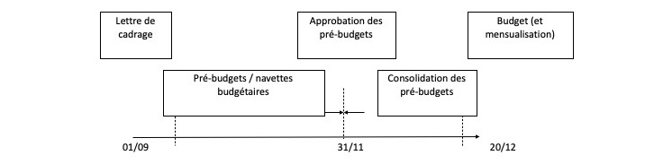
Figure 7: Un exemple de calendrier budgétaire
3.4 Le budget : des rôles divers
Divers rôles sont attribués au budget. Anthony résume les finalités du budget et du processus de préparation budgétaire en cinq points12 : "(1) Motiver les managers à dresser des plans, (2) informer les managers de ce qui est attendu d'eux, (3) obtenir un engagement des managers, (4) coordonner les différentes activités d'une organisation, (5) fournir un standard pour juger la performance réelle".
Les rôles le plus souvent mis en avant s'articulent autour de quatre pôles : coordination/communication, gestion prévisionnelle, délégation/motivation et apprentissage au management. Ainsi, le processus budgétaire est l'occasion pour les divers services de se coordonner, par exemple de s'assurer que ce qui va être vendu par le service commercial aura bien été produit par les usines. Le budget doit permettre de prévoir les difficultés à venir et de choisir les programmes d'activité : il est donc un outil de gestion prévisionnelle. Le budget peut aussi être utilisé comme un contrat passé entre un responsable et sa hiérarchie sur les résultats à atteindre et/ou les moyens à mettre en œuvre. Enfin, le budget est une occasion privilégiée pour introduire la dimension économique et financière dans les choix opérationnels qui sont faits. Il est à ce titre un outil d'apprentissage au management.
Comme l'ont souligné Barrett et Fraser13, certains rôles sont incompatibles et l'utilisation du budget pour des rôles différents peut entraîner des effets pervers. Ils mettent notamment en évidence un conflit majeur entre les fonctions de prévision, de coordination et de communication d'une part et la fonction de délégation et d'évaluation d'autre part. En effet, les budgets utilisés pour la planification et la prévision doivent être fixés à un niveau réaliste pour permettre l'allocation des ressources et la coordination alors que s'ils sont utilisés pour motiver, ils doivent être fixés de façon à être difficiles à atteindre. Il y a donc contradiction entre la volonté de prévoir l'avenir le mieux possible et celle d'amener des managers à s'engager sur des objectifs ambitieux.
De plus, on peut penser que les intérêts des supérieurs et des subordonnés diffèrent selon le rôle qui est accordé au budget. Ainsi, si le budget est d'abord utilisé dans un but de planification, les contrôlés ont intérêt à ce qu'on leur fixe des objectifs budgétaires plus importants pour disposer de plus de ressources. Si le budget est utilisé dans un but de motivation, les contrôlés vont chercher à minimiser leurs objectifs budgétaires pour accroître leurs chances de les atteindre. C'est ce qu'on appelle le slack ou matelas budgétaire.
Pour réconcilier les divers objectifs du budget, plusieurs solutions peuvent être mises en œuvre. Ainsi, lors du processus de consolidation budgétaire, il est possible pour le responsable de se constituer des matelas budgétaires afin de fixer des objectifs assez difficiles à atteindre à ses subordonnés tout en donnant à ses supérieurs des objectifs budgétaires qui sont des prévisions réalistes. Une autre solution est de dissocier le système qui permet de fixer des objectifs du processus de prévision budgétaire. À vouloir faire remplir des rôles trop divers au budget, il n'en remplirait plus aucun. En dépit de son rôle central dans le processus de contrôle de gestion, le budget a ainsi fait l'objet de nombreuses critiques et ce depuis longtemps.
3.5 Le budget et ses critiques
Depuis l'étude d'Argyris au début des années 195014, le budget fait l'objet de critiques importantes. L'école des relations humaines en contrôle de gestion s'est ainsi développée sur l'étude de ses effets négatifs sur la motivation. Argyris souligne notamment que les budgets ne permettent pas de comprendre la performance, s'intéressent à la performance passée, sont rigides et parfois irréalistes. Ils sont de plus un moyen de pression qui crée de la tension, détruit la coopération et produit du stress. La solution proposée par l'école des relations humaines est alors de promouvoir la participation des opérationnels au budget pour favoriser leur implication.
Au début des années 1990, la critique du budget reprend de la vigueur. Deux remèdes ont ainsi été proposés, celui des partisans d'une amélioration du budget grâce à l'Activity Based Budgeting (ABB) et celui des adeptes de sa suppression dans le cadre du Beyond Budgeting (BB)15. Il est ainsi reproché au budget de faire prévaloir le court terme sur le long terme, de rigidifier l'entreprise, de négliger la gestion de la valeur, d'inciter au marchandage pour obtenir des bonis, de provoquer de l'individualisme et du stress, d'être bureaucratique et de faire oublier la concurrence.
Les critiques émises semblent relever de trois catégories : une critique du contrôle de gestion comme mode de direction par objectifs, une critique des effets pervers du budget et une critique du budget comme un des éléments du système de planification stratégique.
Le budget est critiqué car il va souvent de pair avec un mode de management contractuel de type délégation/évaluation/rémunération qui ne permet pas toujours d'exploiter au mieux les compétences des salariés. On retrouve ici plus ou moins la critique du behaviorisme qui prônait dans les années 1970 le "management participatif" et dans les années 1990 "l'empowerment". Le courant "Beyond Budgeting" en fait le cœur de sa critique16 :
"Les entreprises ont investi des sommes considérables dans les technologies de l'information en réseau, le reengineering des processus et une palette d'outils de management tels que l'EVA, le balanced scorecard et la comptabilité d'activité. Mais elles n'ont pas été capables d'établir un “nouvel ordre” parce que le budget et la culture de type “diriger et contrôler” restent prédominants."
Ce mode de management a, de plus, un certain nombre d'effets pervers, qui correspondent de manière générale aux reproches que l'on peut faire au contrôle de gestion (cloisonnement, vision à court terme, ne permet de gérer que le financier, empêche l'innovation…). Plus généralement, comme tout système formalisé, il peut être à l'origine des cercles vicieux bureaucratiques tels qu'ils ont été identifiés par les sociologues des organisations américains depuis les années 1950. Pour Hope et Fraser, le contrat budgétaire est à l'origine de nombreux comportements opportunistes :
"Essayer de négocier au plus bas les objectifs, obtenir son bonus à tout prix, faire passer le client après les objectifs, ne pas partager le savoir, dépenser le budget intégralement, pouvoir expliquer les écarts, ne pas fournir des prévisions justes, atteindre le budget, mais ne pas le dépasser et ne pas prendre de risques".
Ils ajoutent même qu'il serait l'origine des grandes faillites et fraudes nord-américaines :
"Dans des cas extrêmes, l'utilisation du budget pour forcer l'amélioration des performances peut conduire à des failles dans l'éthique des entreprises. Les personnes qui travaillaient à WorldCom, aujourd'hui en faillite […] disent que les demandes rigides du président, Bernard Ebbers, étaient incontournables dans la vie dans l'entreprise. “Vous aviez un budget et il vous demandait de faire 2 % de moins que le budget”, a dit une personne travaillant à WorldCom […] “rien d'autre n'était accepté”. WorldCom, Enron, Barings Bank et les autres entreprises qui ont chuté avaient des processus de contrôle budgétaire serrés qui n'orientaient l'information que vers ceux qui “doivent savoir”."
Jensen, pourtant ardent partisan d'une vision contractuelle de l'entreprise (dans le cadre de la théorie de l'agence), n'est pas moins véhément lorsqu'il affirme17 :
"Le budget est une blague, et tout le monde le sait. Il prend beaucoup de temps aux managers, les forçant à tenir des réunions répétées et sans fin et à s'investir dans des négociations tendues. Il encourage les managers à mentir et à tricher, à minimiser les objectifs et à gonfler les résultats et il les pénalise lorsqu'ils disent la vérité. Il transforme les décisions en un jeu et monte les collègues les uns contre les autres, créant de la méfiance et de la rancune. Il produit des distorsions dans les incitations en motivant les gens à agir dans un sens qui va contre l'intérêt de leur entreprise."
Ce sont les effets pervers induits par un système de contrôle financier strict, tel le contrôle budgétaire, qui semblent être au centre de ces critiques.
Une troisième catégorie de critiques a trait à la capacité des budgets à faire passer la "bonne stratégie". Au-delà du budget, c'est la faillite de la planification stratégique préconisée par l'école de Harvard ou par Ansoff de la fin des années 1960 aux années 1970 qui est critiquée ici. Il semblerait que le budget traduise généralement assez mal la stratégie telle qu'elle est proposée dans les plans stratégiques. Gérer avec des plans à long terme conduirait également à rigidifier l'entreprise en ne lui permettant pas de s'adapter aux opportunités qui se présentent en cours d'année. Cela interdirait aussi l'émergence d'idées stratégiques émanant de la base.
Malgré les critiques, le budget reste largement utilisé. Les différentes enquêtes réalisées montrent en effet que la quasi-totalité des entreprises et des organisations réalise des budgets. Certes, elles ne l'utilisent pas toutes de la même manière18 : certaines en font la référence incontournable de l'évaluation des responsables alors d'autres n'y accordent que peu d'importance, certaines impliquent les gestionnaires dans sa construction alors que d'autres ont une démarche plus participative. On constate ainsi que le budget fait l'objet de critiques lorsqu'il est peu participatif et qu'il est utilisé de manière stricte pour l'évaluation des gestionnaires.
La planification et le budget sont des outils au cœur du fonctionnement des grandes organisations aujourd'hui. Ils servent à savoir où l'entreprise va et à s'assurer du déploiement des choix stratégiques dans l'entreprise. Ces plans sont parfois utilisés pour discuter avec des apporteurs de capitaux (banquier, actionnaires potentiels), notamment dans le cas des entreprises en phase de croissance (start-up). Ils sont alors appelés "Business Plan"
Pour vous exercer sur cette section, voir les exercices sur ZoneCours et le quiz d'entrainement : https://app.wooclap.com/COMP50900/questionnaires/5f6898f251af0040aba9284c
4 Mesure de la performance financière
Au-delà de l'aide à la décision, les données comptables peuvent être utilisées pour le contrôle des gestionnaires. Dans le cadre de ce cours, on se limitera aux mesures financières de la performance. Nous verrons quelles mesures financières peuvent être utilisées pour faciliter le contrôle de gestionnaires, mais aussi quels sont les risques liés à l'utilisation de ces mesures.
4.1 Mesure de performance et gestion par les résultats
4.1.1 Gestion par les résultats et pilotage
La mesure de la performance permet de « gérer par les résultats »19 en mettant en œuvre un contrôle a posteriori. Elle prend alors la forme d’un contrôle cybernétique permettant à la direction de s’assurer que les objectifs fixés vont être réalisés20. Elle facilite ainsi le pilotage et la convergence des buts dans l’organisation.
Une bonne image de ce mécanisme cybernétique est donnée par l’exemple du thermostat. Celui-ci va déceler une différence entre la température réelle d’une pièce et la température souhaitée et réagir à cette divergence en allumant ou en éteignant le chauffage pour obtenir la température désirée. La « gestion par les résultats » s’apparente également à un processus cybernétique puisqu’elle vise à identifier les différences entre les objectifs et le niveau réel de performance afin de déclencher des mesures d’ajustement lorsque des écarts sont identifiés.
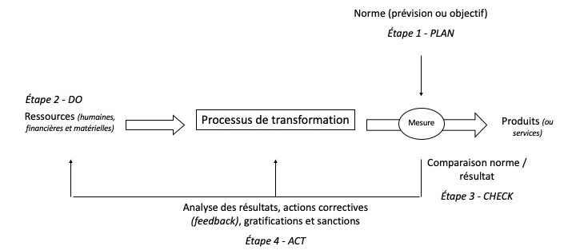
La gestion par les résultats repose, dans un premier temps, sur la fixation d’une norme chiffrée (étape 1). La définition de cette norme n’a bien sûr rien d’évident. Elle peut s’appuyer sur une prévision (effectuée dans le cadre du processus budgétaire, par exemple) ou traduire un objectif volontariste de la direction (infléchissement de tendance). Parfois, la définition de cette norme est réalisée en se comparant aux concurrents (analyse comparative) ou en faisant participer ceux qui sont contrôlés afin d’améliorer la prévision qui est faite (puisqu’on suppose que la personne contrôlée connaît souvent mieux l’activité et son évolution que la personne qui la contrôle) et son appropriation par la personne qui est chargée de la mise en œuvre. On parle alors de direction participative par objectifs. Cette participation à la définition des objectifs pose cependant un problème : lors de la discussion de ses objectifs, la personne contrôlée a intérêt à minimiser la difficulté des objectifs qui lui sont assignés afin de s’assurer qu’elle pourra les atteindre. Dans le cadre du processus budgétaire, ce phénomène est qualifié de slack budgétaire.
Dans un deuxième temps (étape 2), la personne contrôlée est laissée libre d’organiser la transformation des ressources en produits ou la réalisation de ses activités de la manière la plus efficace et la plus efficiente.
Les résultats obtenus font ensuite l’objet d’une mesure qui est comparée aux objectifs préalablement fixés (étape 3). La mesure peut concerner des unités physiques (nombre de produits, temps passé, etc.) les entreprises mettent souvent l’accent sur des mesures de nature comptable et financière, particulièrement lorsque cela concerne des gestionnaires.
Si un écart significatif entre la norme et le résultat réel est constaté, des actions correctives sont alors engagées (étape 4). Celles-ci peuvent conduire à modifier le processus de transformation et/ou les ressources mises en œuvre dans ce processus. Dans le même temps, l’atteinte (ou non) des normes de résultats définies a priori conduit à attribuer des primes (monétaires ou autres) aux responsables ou à les sanctionner.
4.1.2 Les avantages de la gestion par les résultats
La gestion par les résultats offre de nombreux avantages qui expliquent son rôle dans le développement des grandes organisations nord-américaines au début du XXᵉ siècle21. Parmi eux, trois raisons majeures sont le plus souvent avancées :
- La gestion par les résultats s’appuie sur des données comptables et financières. Elle permet par conséquent d’appliquer un langage commun à l’ensemble de l’organisation, quelles que soient la diversité des produits et des services proposés et la variété des activités réalisées. Elle facilite, de ce fait, la gestion à distance dans les grandes organisations diversifiées en permettant à la fois la déclinaison des informations centrales et la synthèse des informations locales ;
- La gestion par les résultats permet de décentraliser la prise de décision en échange du contrôle des résultats. De nombreuses décisions peuvent ainsi être prises par les responsables sur le terrain, au plus proche des opérations, ce qui favorise une meilleure qualité de l’information et permet une réactivité accrue dans la prise de décision. En outre, cette décentralisation de la prise de décision permet à la direction de se limiter à un contrôle par exception - c’est-à-dire restreint aux déviations notables par rapport aux objectifs – et ainsi de se consacrer aux décisions importantes, plus stratégiques qu’opérationnelles ;
- La gestion par les résultats doit permettre de responsabiliser, d’évaluer et donc de motiver des salariés à partir des objectifs qui leur ont été fixés. À ce titre, c’est un outil de gouvernement des hommes qui peut être utilisé à tous les niveaux de l’organisation pour s’assurer que chacun fait des efforts dans l’intérêt de l’organisation.
Au-delà de ses avantages en termes d’efficacité et d’efficience, ce système est présenté parfois comme une avancée démocratique. En substituant « la pratique d’un contrôle gestionnaire autonome à celle qui reposait sur la domination » la gestion par les résultats permettrait, en effet, d’atteindre un « idéal » démocratique dans lequel la responsabilité de chaque individu est mesurée dans le cadre d’un contrat passé préalablement à l’action entre des individus libres et égaux22.
4.1.3 Gérer par les résultats : hypothèses sur le processus contrôlé et la motivation des individus
La gestion par les résultats permet de piloter un processus de transformation d’inputs (ressources) en outputs (produits) en assignant à chaque responsable des objectifs et en lui offrant, en contrepartie, la maîtrise de moyens et une certaine liberté de mise en œuvre pour atteindre ses objectifs. De son côté, celui qui contrôle va pouvoir le faire par exception, c’est-à-dire en s’impliquant uniquement en cas de déviation significative par rapport aux objectifs. Cependant, ce modèle de gestion repose sur des hypothèses concernant le processus à contrôler et la manière dont les individus sont motivés.
Une première hypothèse porte sur le processus contrôlé.
Mettre en œuvre une gestion par les résultats suppose de pouvoir définir des normes, de savoir les mesurer, d’être capable de quantifier les résultats attendus et de les décliner dans le temps et dans l’espace. Il est, en effet, nécessaire de définir des objectifs au niveau des différents processus de l’organisation et mesurer l’atteinte ou non de ces objectifs (étapes 1 et 3). Pourtant, il est parfois difficile d’expliciter les objectifs d’une organisation ou d’une entité, notamment parce qu’il n’y a pas toujours accord sur l’objectif entre les différents acteurs ou parce que l’objectif n’a pas été défini explicitement (il résulte des habitudes prises par chacun dans l’organisation). Ce phénomène est particulièrement important dans les organisations publiques, mais il touche aussi les entreprises.
La mise en place d’un contrôle par les résultats suppose, une fois les objectifs définis, de les mesurer. Or, même lorsqu’il est possible de se mettre d’accord sur les objectifs, ces derniers peuvent être difficilement mesurables ou quantifiables. Ainsi, parce qu’il s’appuie d’abord sur des données financières, le contrôle par les résultats a du mal à évaluer l’impact des politiques de qualité ou d’innovation. Il est aussi difficile de le mettre en place dans les organisations publiques (institutions d’enseignement, hôpitaux, aide sociale) ou des entités qui doivent innover du fait de la difficulté à mesurer les résultats de ce type d’organisations et à lier avec certitude les inputs et les outputs. Dans ce cas, les effets d’un contrôle par les résultats sont cependant ambigus. Afin de mettre en œuvre des actions correctives (étape 4), il est en outre nécessaire d’avoir un modèle prédictif du processus contrôlé. Autrement dit, il faut être capable de savoir quelles sont les actions correctives qui doivent être mises en œuvre afin d’atteindre l’objectif préalablement fixé, c’est-à-dire être capable de modéliser les relations causes-effets. Dans le cas du thermostat, le modèle prédictif est simple : lorsque la température est trop faible, il suffit de mettre en marche le chauffage. Dans le cas de la gestion d’une organisation, ce modèle prédictif est plus rarement connu et il n’existe alors pas de méthode simple et automatique pour mettre fin aux écarts entre la norme et les résultats.
En résumé, faire du contrôle par les résultats suppose de pouvoir définir un objectif, de pouvoir le mesurer et de modéliser les relations entre les causes et les effets pour définir des actions correctives
Le modèle de la gestion par les résultats fait ensuite une double hypothèse sur les individus qui composent les organisations et leurs motivations.
D’une part, il suppose que le manager ou le contrôleur est capable de fixer des objectifs pertinents pour la performance de l’organisation, ce qui sous-entend qu'il est parfaitement rationnel et d’une loyauté sans failles vis-à-vis de l’organisation et que ses propres objectifs sont cohérents avec ceux de son organisation. Cela est loin d’être évident.
D’autre part, il présume que la personne contrôlée est potentiellement opportuniste. Il suppose donc qu’elle cherche à minimiser ses efforts et qu’il faut, par conséquent, la contraindre à travailler, en mettant en œuvre des systèmes d’incitation extrinsèques qui vont orienter ses efforts afin de la faire participer aux objectifs de l’organisation. C’est l’individu décrit par ce que McGregor a décrit comme la théorie X du management23 : celui qui, réfractaire au travail, ne fournit d’effort que sous la contrainte, qui n’aime pas les responsabilités et préfère être dirigé, qui désire la sécurité et ne déploie son intelligence que pour contourner les règlements.
Dans cette perspective, les motivations extrinsèques (guidée par des raisons externes à l’individu, par exemple des objectifs liés à une rémunération) jouent un rôle déterminant dans la motivation.
Il faut cependant tenir compte des attentes réelles des salariés, le salaire et les primes n’étant qu’une des composantes de la satisfaction, en concurrence avec la sécurité de l’emploi, certains avantages acquis, certaines marques de reconnaissance, etc.24. Les individus ne sont de plus pas uniquement motivés par des facteurs extrinsèques. Il existe des facteurs intrinsèques de motivation. Dans sa version "direction participative par objectifs", le management par objectifs s’appuie sur le postulat inspiré des travaux de l’école des relations humaines selon lequel la participation et la responsabilisation des salariés favoriseraient leur implication et permettraient donc la réalisation des objectifs de l’organisation. On est alors plus proche de ce que McGregor a appelé la théorie Y, qui postule que si une activité apporte des satisfactions à un salarié alors son engagement envers l'organisation s'améliore, que chaque individu est capable de se réaliser si on l'associe aux buts de l'organisation et que, mis dans de bonnes conditions, il accepte et recherche les responsabilités.
On notera que le niveau auquel doit être fixée la norme n’a rien d’évident. Faut-il se référer à une prévision qui se contenterait de reproduire la tendance observée ou fixer des objectifs ambitieux ? Des objectifs trop lâches, pas assez ambitieux, motivent peu, car les responsables peuvent céder à la facilité : on dit que l’organisation n’est alors pas « mise sous tension ». En augmentant la difficulté des objectifs, on peut dynamiser les équipes qui ont ainsi un défi à relever. Mais au-delà d’un certain seuil, au lieu de renforcer la motivation, des objectifs trop ambitieux découragent, « démobilisent » les responsables qui peuvent avoir le sentiment qu’on leur demande trop, et que, quels que soient leurs efforts ils ne pourront pas atteindre l’objectif, ce n’est pas la peine d’essayer. Les relations complexes entre objectif, motivation, récompense et performance ont été modélisées par la théorie de l’expectance25. Cette théorie repose sur l’idée que la motivation d’un individu à faire des efforts dépend de la conjonction de trois facteurs : la probabilité perçue par cet individu que son effort le mène au succès (expectance), la probabilité que ce succès entraîne effectivement une récompense (une promotion ou une hausse de salaire par exemple), et la valeur que cet individu attache au type de récompense prévisible. Ainsi, les objectifs doivent paraître à la fois ambitieux et accessibles pour jouer pleinement leur rôle incitatif26.
Au-delà des hypothèses sur les objectifs et les motivations, la gestion par les résultats repose sur une troisième hypothèse : il est possible de découper l'organisation en plusieurs entités (que l'on appelle centres de responsabilité) dont on peut mesurer la performance.
4.2 Gestion par les résultats et centres de responsabilité
Pour contrôler par les résultats, il faut aussi découper l’organisation en centres de responsabilité et s’assurer de la convergence des buts.
Un centre de responsabilité est une subdivision de l’entreprise à la tête de laquelle est placé un responsable auquel sont fixés des objectifs et alloués un budget et des moyens. Le découpage de l’entreprise en centres de responsabilité est indispensable pour mettre en place un pilotage par les résultats, c’est-à-dire pour fixer des objectifs, assigner des responsabilités et clarifier l’autorité de chacun des acteurs impliqués. Divers types de centres de responsabilité existent :
- les centres de coût, qui rendent compte de leurs coûts, par exemple : une usine ;
- les centres de revenus, qui sont responsables de leur chiffre d’affaires, par exemple : un agent commercial ;
- les centres de profit, qui sont responsables à la fois de leurs coûts et de leur chiffre d’affaires et pour lesquels il est, par conséquent, possible de déterminer un résultat ;
- les centres d’investissement, qui sont responsables de leur marge et de leurs investissements.
Dans les organisations, ces divers types de centres de responsabilité s’emboîtent les uns dans les autres, réalisent des transactions réciproques, et peuvent parfois influencer leurs résultats.
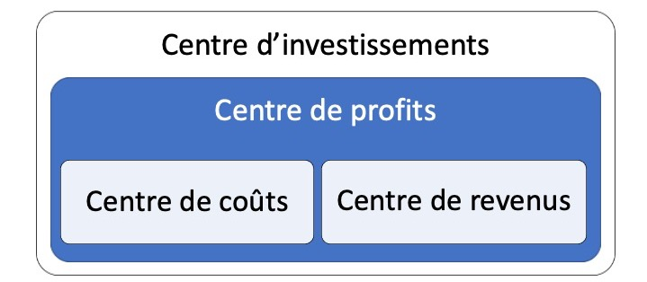
Le découpage de l’organisation en centres de responsabilité qui en découle permet de clarifier l’organisation, d’amoindrir sa complexité, d’attribuer des responsabilités à chacun et donc de décentraliser.
La décentralisation est le processus par lequel la prise de décision est déléguée aux responsables des unités d'affaires.
La décentralisation a des avantages majeurs :
- Facilite la prise de décision et réduit le temps de réaction, puisque les décideurs sont plus près des problèmes et de l’information
- Libère la haute direction pour la gestion stratégique
- Motive les directeurs en leur donnant des responsabilités
- Permet de préparer la relève
Elle comporte cependant un certain nombre de risques :
- Non-conformité entre les objectifs de l’organisation et ceux des unités d’affaires
- Prise de décision sur la base d’une information partielle ne couvrant pas l'ensemble de l'organisation
- Dédoublement de certaines tâches, du fait de l'absence de coordination centrale
La difficulté est donc de trouver les normes qui permettent de faire converger les objectifs d’un centre de responsabilité avec les objectifs du centre de responsabilité du niveau supérieur et qui ne conduisent pas à transférer l’efficience ou l’inefficience d’un centre vers un autre. En d’autres termes les objectifs doivent permettre d’assurer la convergence des intérêts individuels et de l’intérêt collectif.
Exemple - Optimisation locale et performance globale de l’entreprise
Une entreprise décide de fixer des objectifs de restriction des coûts à tous les services supports. Il est ainsi demandé au service maintenance une diminution de 20%. Le responsable du service maintenance met tout en œuvre pour atteindre ses objectifs : il minimise ses achats de pièces et il décide de ne pas remplacer le personnel en congé en ne faisant pas appel aux intérimaires. L’objectif est atteint. On constate cependant un dérapage des coûts de l’usine. En effet, du fait des déficits de maintenance, les arrêts de la chaine de production ont été plus fréquents. La productivité a baissé. Pour atteindre ses objectifs de production, l’usine a donc dû faire faire des heures supplémentaires à ses employés, ce qui a augmenté ses coûts.
—
Si l’on veut que les normes soient incitatives, il est nécessaire de s’assurer que les personnes évaluées ne sont tenues responsables que d’éléments sur lesquels elles peuvent agir. Cela correspond au principe de contrôlabilité selon lequel la responsabilité d’un manager ne peut s’exercer que sur les éléments qu’il contrôle et sur lesquels il dispose de leviers d’action. Autrement dit : on ne peut tenir un manager responsable des éléments « non contrôlables » (par lui-même) qui devraient, par conséquent, être exclus de l’évaluation de ses performances. Il est facile de comprendre les raisons de ce principe. La plus importante tient au fait qu’il serait injuste, et donc démotivant, de demander à un manager de rendre des comptes sur des éléments qui ne dépendent pas de son action27.
Les mesures financières de performance de chacun des centres de responsabilité devraient ainsi être adaptées au type de responsabilité de chacun de ces centres.
4.3 Mesurer la performance des centres de responsabilité
4.3.1 Le contrôle budgétaire et le calcul des écarts
Le contrôle budgétaire s’appuie sur les prévisions réalisées dans le budget pour comparer l’état réel à l’état prévu. La mise en œuvre de cette méthode suppose donc de disposer des données prévisionnelles et des données réelles pour la même période.
Après avoir été calculés, les écarts sont qualifiés de favorables (par exemple, si un coût est moins élevé que prévu) ou défavorables (par exemple, si un coût est plus élevé que prévu).
Différents écarts peuvent être calculés :
- Les écarts sur coûts directs (matières premières, main-d’œuvre, etc.) et indirects permettent de s’assurer de la performance du service de production ou de tout centre de coûts.
- Les écarts sur marge et sur chiffre d’affaires permettent d’évaluer la performance du service vente.
- Les écarts sur résultat, qui permettent d’évaluer la performance des centres de profit.
Les avantages du contrôle budgétaire sont les suivants :
- Il permet une gestion par exception, ce qui signifie que les managers vont s’attacher aux écarts importants et ne vont pas se préoccuper des activités pour lesquelles un écart faible ou aucun écart n’apparaît.
- Il permet de trouver les causes (décomposer les écarts pour pouvoir les lier à des responsables) qui expliquent le fait que le résultat n'est pas conforme aux prévisions. Il fait ressortir les responsabilités de chaque activité ou chaque service dans la constitution du résultat global de l’entreprise. Il peut donc être utilisé pour mesurer la performance des différentes entités dans l’organisation.
- Il incite les gestionnaires à prendre des actions correctives afin de résorber ces écarts (en changeant les moyens mis en œuvre, ou en changeant les objectifs s’il s’avère que les objectifs définis a priori n’étaient pas atteignables). Le contrôle budgétaire est donc un outil indispensable lors de la phase de pilotage du processus de contrôle.
Les écarts peuvent ainsi expliquer les variations du résultat de l’entreprise par rapport aux prévisions. Ils sont particulièrement adaptés pour évaluer la performance des centres de coûts, mais ils peuvent aussi être utilisés pour évaluer la performance des centres de revenu.
La méthode a cependant un certain nombre de limites. D’abord, elle ne permet de vérifier que ce qui est fait par l’entreprise est bien ce qui avait été prévu. Pourtant, si l’environnement évolue, il peut être nécessaire et efficace de ne pas faire ce qui avait été prévu. De plus, elle permet d’expliquer le passé, mais n’aide pas à anticiper l’avenir. Il faut aussi noter que la mécanique du contrôle budgétaire est lourde ; elle implique d’avoir recours à de nombreux comptables et coûte cher. Enfin, le contrôle budgétaire limite à l’appréciation de la performance aux prix et aux quantités ; rien n’est dit sur d’autres dimensions fondamentales de la performance (la qualité, la flexibilité, etc.).
Il existe de multiples modalités pour calculer les écarts. La mise en œuvre de la méthode dépend de calculs réalisés par les comptables et dépasse le cadre de ce cours.
4.3.2 Le calcul et l'analyse du ROI
Pour les centres d'investissement (qui sont responsables à la fois de leurs revenus, de leurs coûts et de leurs investissements), il est logique d'évaluer la performance financière par la rentabilité.
Le ROI (Return on Investment) est un ratio de rentabilité économique qui mesure un retour un investissement. Cette mesure est très largement utilisées dans les entreprises 28. Ce ratio est assez proche du ROCE (Return on Capital Employed) et du ROA (Return on Assets), qui sont aussi largement utilisés dans les organisations. Cette mesure de la performance est uniquement financière, mais elle permet, grâce à sa décomposition pyramidale, d'évaluer de nombreux aspects de la gestion d'une division. Elle présente l'avantage, contrairement à un simple résultat comptable, de permettre de comparer des entités de taille différente. De plus, elle peut être calculée directement à partir du bilan comptable, elle est donc simple à calculer et à comprendre.
Plusieurs formulations du ROI sont possibles, mais elles prennent toute la forme d'un ratio du type :
ROI = Bénéfice / Actif
Deux questions se posent alors : quel type de bénéfice retenir ? quels actifs prendre en compte ?
La formulation suivante sera retenue, car elle permet de prendre en compte ce qui est réellement investi dans l'activité (et neutralise les effets des charges financières) :
ROI = Bénéfice d'exploitation après impôts (1) / Actifs investis (2)
Avec : (1) = Bénéfice net + intérêts financiers = Bénéfice d'exploitation - impôts (2) = Besoin en fonds de roulement + Immobilisations
D'autres formulations peuvent être envisagées en fonction des entreprises, et cela afin de mettre en évidence au mieux les responsabilités des managers évalués et la performance des entités.
Exercice - Le calcul du ROI
Pour l'année N, vous disposez des éléments suivants :
| en K $ | Division A | Division B | Division C |
|---|---|---|---|
| Chiffre d'affaires | 94 500 | 108 000 | 216 000 |
| Charges d'exploitation et impôts | 56 700 | 97 200 | 205 200 |
| Résultat d'exploitation après IS | 37 800 | 10 800 | 10 800 |
| Immobilisations brutes | 243 000 | 108 000 | 270 000 |
| – Dépréciations | 27 000 | 54 000 | 162 000 |
| = Immobilisations nettes | 216 000 | 54 000 | 108 000 |
| Actif circulant | 162 000 | 54 000 | 27 000 |
| Total actif | 378 000 | 108 000 | 135 000 |
| Dettes d'exploitation | 0 | 0 | 0 |
Travail à faire
Pour chacune des trois entités, calculer le retour sur investissement
(ROI).
Corrigé
| en K $ | Division A | Division B | Division C |
|---|---|---|---|
| (1) Résultat d'exploitation après IS | 37 800 | 10 800 | 10 800 |
| (2) Total de l'actif investi | 378 000 (1) | 108 000 | 135 000 |
| (1)/(2)=ROI | 10 % | 10 % | 8 % |
(1) = 162 000 - 0 + 216 000
—
La pyramide du ROI permet d'expliquer la formation du retour sur investissement en considérant que le ROI s'explique par le taux de marge (la marge générée par le chiffre d'affaires) et par la rotation des actifs (c'est-à-dire le chiffre d'affaires généré par un dollar investi).
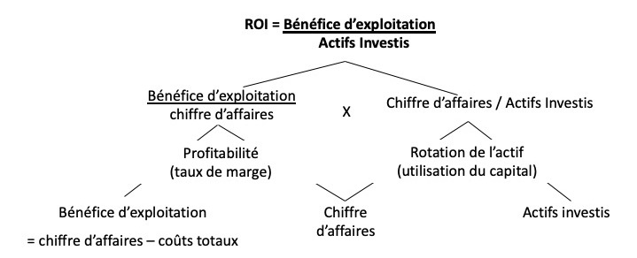
Figure 8: La pyramide du ROI
Deux entreprises peuvent ainsi avoir un même ROI, mais en l'obtenant de manière très différente. Par exemple, les activités de luxe ou de construction exigent de forts investissements (faible rotation des actifs), mais permettent de forts taux de marge. Inversement, les activités de distribution vont avoir un fort taux de rotation des actifs (puisqu'elles payent leurs fournisseurs avec d'importants délais alors que leurs clients payent au comptant) et un taux de marge peu élevé.
Exercice (suite) : La décomposition du ROI
Travail à faire
Décomposer le ROI pour les trois divisions. Commenter.
Corrigé
La décomposition du ROI pour les trois divisions donne les calculs suivants :
| En K $ | Division A | Division B | Division C |
| (1) Chiffre d'affaires | 94 500 | 108 000 | 216 000 |
| (2) Résultat d'exploitation après IS | 37 800 | 10 800 | 10 800 |
| (3) Total de l'actif investi | 378 000 | 108 000 | 135 000 |
| (2)/(1)=Taux de marge | 0,4 | 0,1 | 0,05 |
| (1)/(3)=Rotation des actifs | 0,25 | 1 | 1,6 |
| ROI = taux de marge x rotation des actifs | 10 % | 10 % | 8 % |
Deux des trois entités ont le même retour sur investissement, mais elles l'obtiennent de manière très différente. La division A a un très fort taux de marge (40 %), mais demande des investissements importants, d'où un faible taux de rotation des actifs. Inversement, la division B a un taux de marge moyen (10 %), mais un taux de rotation des actifs plus importants, ce qui lui permet d'avoir un ROI équivalent à la division A.
La division C a un très faible taux de marge (5 %). Mais elle semble nécessiter des investissements assez faibles. Sa rentabilité économique est donc tout de même plus faible que celle des autres divisions.
—
La décomposition de la pyramide peut être poursuivie pour faire apparaître un grand nombre de composantes de la performance de l'entreprise, ainsi que les leviers d'action envisageables pour améliorer la rentabilité.
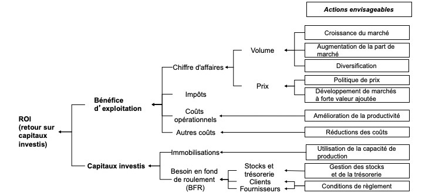
Figure 9: La décomposition du ROI
En résumé, le ROI synthétise "la performance financière des managers ayant la charge de faire face au marché, et maîtrisant pour cela les paramètres qui déterminent les ventes, les coûts et l'actif du bilan"29. Il permet aussi de transformer l'entreprise en un vaste marché financier interne permettant à la direction d'allouer des ressources aux projets dont les ambitions et la logique financière leur conviennent ; il permet aux dirigeants de garder le contrôle par la logique financière. Il est, en outre, un langage commun assez compréhensible pour l'ensemble de la hiérarchie.
Il peut, de plus, être relié directement aux attentes des actionnaires et à la rentabilité financière (que l'on nomme en général ROE : Return on Equity), par l'intermédiaire de l'effet de levier, notion que vous verrez dans le cours de finance.
4.3.3 Les limites du ROI
En dépit de son intérêt, le ROI a un certain nombre de limites qui devraient inciter à l'utiliser avec précaution :
- D'abord, le ROI est calculé à partir de données comptables qui sont le résultat de choix et de conventions comptables et fiscales. Ainsi, l'évaluation des stocks ou des provisions a une incidence sur le bénéfice et sur le montant des actifs et donc sur le ROI. La principale difficulté vient ainsi de l'évaluation des actifs. En effet, si ces actifs sont évalués à la valeur comptable, il est possible d'améliorer mécaniquement le ROI par la simple dépréciation comptable des actifs due aux amortissements.
- Ensuite, l'utilisation du ROI peut conduire à limiter les investissements et cela se fait au détriment du long terme. En effet, pour améliorer le ROI, deux tactiques sont possibles : soit améliorer le bénéfice, soit diminuer les actifs. L'amélioration des bénéfices n'est pas forcément aisée. Il semble finalement plus simple de diminuer les actifs. Un arrêt des investissements aura mécaniquement un effet sur le montant des actifs. L'impact du vieillissement des actifs n'aura pas forcément de conséquences sur le court terme, il permettra d'améliorer le ROI, mais sur le long terme, un outil de production vieillissant conduira certainement à une détérioration du résultat.
- Enfin, un directeur d'entité pourrait être incité, pour améliorer son ROI, à accepter des investissements qui pourtant détruisent de la valeur et à refuser des investissements qui pourraient en créer.
L'emploi d'un ratio amplifie les effets pervers mis en évidence ci-dessus puisque cela permet de jouer sur le numérateur et le dénominateur. L'évaluation du bénéfice résiduel permet, en partie, de résoudre ces problèmes.
4.3.4 Bénéfice résiduel
Le bénéfice résiduel est un indicateur de performance mesurant la création de valeur d'une entreprise ou d'une partie d'une entreprise après rémunération des capitaux investis au coût moyen pondéré du capital30.
On peut calculer le bénéfice résiduel de la manière suivante :
Bénéfice résiduel
= résultat d'exploitation après impôts - coût des capitaux investis
Avec : Coût des capitaux investis = capitaux investis x coût moyen pondéré du
capital
Les capitaux investis sont constitués des capitaux propres et de
l'endettement. Le coût moyen pondéré du capital (CMPC) correspond à la moyenne pondérée
du coût de la dette et du coût des capitaux propres.
Coût moyen pondéré du capital
= coût de la dette × Dettes / (dette + capitaux propres)
+ coût des capitaux propres × capitaux propres / (dette + capitaux propres)
Le bénéfice résiduel permet de calculer un bénéfice net après rémunération des actionnaires (on sait que les dividendes versés aux actionnaires ne correspondent pas à une charge, ils n'apparaissent donc pas dans le bénéfice comptable). Le niveau de rémunération attendu par les actionnaires dépend du niveau de risque de l'activité de l'entreprise. Plus une entreprise est risquée et plus le coût de la rémunération des capitaux investis sera donc élevé.
On dit qu'il y a création de valeur lorsque le bénéfice résiduel est positif (il y a destruction de valeur dans le cas contraire). Une entreprise crée de la valeur si elle parvient à dégager un résultat supérieur à la rémunération minimale attendue par les apporteurs de fonds.
4.3.5 Bénéfice résiduel et ROI
Si l'on repart de la définition du bénéfice résiduel, on peut constater que celui-ci est égal à la différence entre le ROI et le coût moyen pondéré du capital multiplié par les actifs investis.
Bénéfice résiduel = Résultat d'exploitation après impôts - coût des
capitaux investis
= ROI x actif - CMPC x actif
= Actif x (ROI - CMPC)
Cette formulation montre qu'un ROI élevé ne signifie pas qu'une entité crée de la valeur : tout dépend du coût moyen pondéré du capital. Ainsi, il ne sert à rien de comparer le niveau de ROI de diverses entités : tout dépend de leur coût moyen pondéré du capital.
Exercice - Calcul du ROI et du bénéfice résiduel
On connaît le résultat d'exploitation après IS et le total de l'actif investi pour les divisions A, B et C.
| En K $ | Division A | Division B | Division C |
|---|---|---|---|
| Résultat d'exploitation après IS | 37 800 | 10 800 | 10 800 |
| Total de l'actif investi | 378 000 | 108 000 | 135 000 |
Compte tenu de leurs niveaux de risque différents, le coût moyen pondéré
du capital pour les trois divisions A, B et C est le suivant : Division
A : 9 % ; Division B : 10 % ; Division C : 10 %
Travail à faire
Calculer le bénéfice résiduel des trois entités. Comparer aux résultats
obtenus avec le ROI. Commenter.
Corrigé
| en K $ | Division A | Division B | Division C |
|---|---|---|---|
| Résultat d'exploitation après IS | 37 800 | 10 800 | 10 800 |
| Total de l'actif investi | 378 000 | 108 000 | 135 000 |
| ROI (rappel) | 10 % | 10 % | 8 % |
| Coût moyen pondéré des capitaux | 9 % | 10 % | 10 % |
| Bénéfice résiduel | 3 780 | 0 | -2 700 |
D'après le calcul du bénéfice résiduel, seule la division A crée de la valeur. On constate d'ailleurs que pour qu'il y ait création de valeur, il faut que le ROI soit supérieur au coût du capital.
—
Nous avons souligné ci-dessus que ROI peut poser des problèmes de sous optimisation. En effet, pour améliorer son ROI une division peut accepter un investissement qui détruit de la valeur pour l'entreprise. Inversement, pour maintenir son ROI à un taux élevé, une division peut refuser un investissement qui créé de la valeur. Le bénéfice résiduel résout ces problèmes : toutes les décisions d'investissement seront réalisées si et seulement si elles créent de la valeur.
Exercice - Calcul du ROI et du bénéfice résiduel (suite)
La société X va dorénavant évaluer ses divisions sur la base de leur ROI. Les managers des divisions recevront des primes basées sur le ROI. Les trois divisions envisagent un investissement dont le ROI est estimé à 9,5 %. Pour chacune des divisions, le niveau de risque du projet d'investissement est identique au niveau de risque de la division.
Travail à faire
Quelles décisions vont prendre les trois responsables de division ? Si leur performance avait été évaluée sur les bénéfices résiduels les décisions des trois responsables auraient-elles été identiques ? Commenter.
Corrigé
Si la performance des entités est évaluée sur le ROI, les entités A et B vont refuser l'investissement, car celui-ci ferait baisser leur ROI, l'entité C va l'accepter puisque cela augmente son ROI.
Si leur performance est évaluée sur le bénéfice résiduel :
- Puisque le ROI de l'investissement est supérieur à son CMPC, la division A va accepter l'investissement (l'investissement va augmenter son bénéfice résiduel) ;
- Puisque le ROI de l'investissement est inférieur à leur CMPC, les divisions B et C vont refuser l'investissement.
Le ROI et le bénéfice résiduel conduisent à des décisions d'investissement différentes :
| Division A | Division B | Division C | |
|---|---|---|---|
| ROI | Refus | Refus | Acceptation |
| Bénéfice résiduel | Acceptation | Refus | Refus |
Les deux critères conduisent dans deux cas sur trois à des décisions différentes. Le critère du ROI pousse donc la division A à refuser un investissement qui pourtant créerait de la valeur. Inversement, la division C va accepter l'investissement alors qu'il va détruire de la valeur.
—
Le bénéfice résiduel permet de vérifier qu'un investissement ou une entité crée de la valeur pour les actionnaires.
Cependant, le calcul du bénéfice résiduel pose des difficultés de mise en œuvre. Il suppose, en effet, de pouvoir calculer le coût du capital investi, et donc de disposer du coût moyen pondéré du capital. Or celui-ci se calcule en faisant la moyenne pondérée du coût de la dette et de la rentabilité attendue par les actionnaires. Cette rentabilité attendue par les actionnaires dépend du niveau de risque et n'est pas la même pour toutes les divisions de l'entreprise. Ce niveau de risque n'est pas si simple à évaluer. On peut aussi noter que le bénéfice résiduel ne permet pas de comparer des activités de tailles différentes.
Sur un plan plus théorique, le fait de demander un bénéfice résiduel systématiquement positif pose des problèmes de soutenabilité. En effet, le coût moyen pondéré du capital représente la rentabilité attendue sur le long terme par les différents apporteurs de capitaux et il n'est pas possible sur le long terme, par construction, d'être à un niveau plus élevé de rentabilité, sauf à prendre plus de risque ou à manipuler les comptes. Le bénéfice résiduel mesure en fait un sur-profit par rapport aux attentes des actionnaires, impossible à atteindre.
4.4 Transformer des centres de coûts ou de revenus en centre de profit : le rôle des prix de cession interne
Un centre de responsabilité peut recevoir tout ou partie de son approvisionnement en provenance de centres de responsabilités situés en amont, et céder tout ou partie de sa production à d’autres centres situés en aval. Les prix de cession interne sont les prix définis par une organisation pour valoriser les transactions internes entre différents centres de responsabilité.
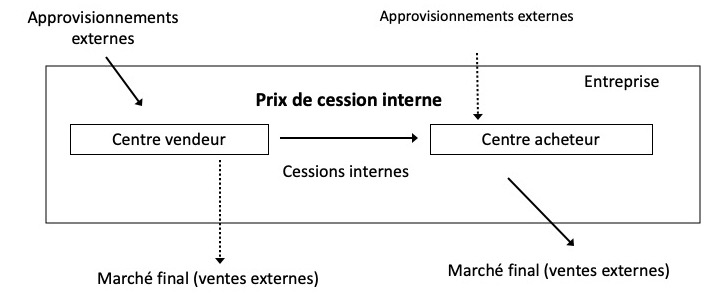
Ces prix sont fictifs, car ils ne correspondent pas à un échange sur un marché ni à une transaction enregistrée en comptabilité financière.
On parle parfois de prix de transfert, notamment lorsque les cessions sont réalisées entre des entités juridiques distinctes appartenant à un même groupe31.
La détermination du profit au niveau de chaque centre suppose une valorisation des cessions internes, d’où l’utilisation de prix de cession interne entre centres "fournisseurs" et centres "clients".
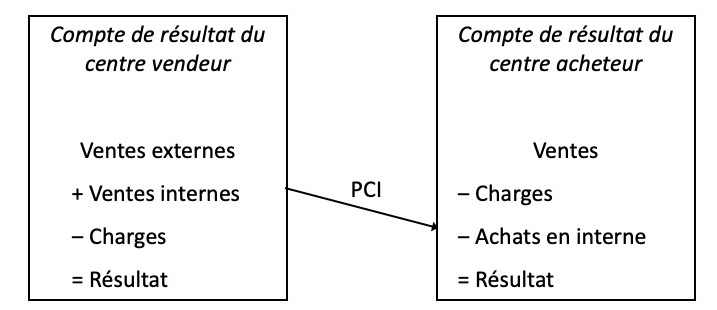
On voit ici que (tant qu’il n’influence pas les décisions d’achat des centres), le niveau du prix de cession interne n’a pas d’incidence sur le résultat total de l’entreprise puisqu’il constitue à la fois un produit et une charge32.
Les prix de cession interne permettent de faire entrer le marché dans l’organisation en transformant des centres de coût ou de revenu en centres de profit, rendant ainsi possible (du moins en apparence) l’évaluation de leur performance par l’intermédiaire de leur résultat. Ils vont ainsi faciliter la mise sous tension de l’organisation, motiver et dynamiser les responsables, et rendre possible l’évaluation les performances, grâce à la mise en place de centres de profit jugés sur des résultats.
Exemple - Mise en place de prix de cession
Supposons que dans l’entreprise E, l'usine achète des matières premières pour 100, engage des frais de fabrication de 50, et livre sa production au département des ventes qui revend le tout pour 200, en engageant 40 de frais de commercialisation.
Le coût de production est : 100 + 50 = 150 ; le coût de complet est : 150 + 40 = 190, et le résultat est : 200 – 190 = 10.
Si les centres production et distribution sont des centres de coût, et que leur fonctionnement est budgété, chacun des responsables se bornera au mieux à tenir son budget, et il sera très difficile d’améliorer le résultat. Si les deux centres sont érigés en centre de profit, avec par exemple un prix de cession interne de 155, et que les responsables sont jugés sur les résultats, on obtiendra un partage du résultat global entre les centres :
Résultat de l'usine
= Cessions internes - Coûts de production
= 155 - (100 + 50) = 5
Résultat du département des ventes
= 200 - (155 + 40)
Chaque responsable sera incité à faire des économies, en évitant les gaspillages, en faisant des gains de productivité. Si, par exemple, le centre production réussit à améliorer le rendement en faisant chuter ses frais de 50 à 48, toutes choses égales par ailleurs, son résultat passera à 7, et le résultat global à 12.
—
Les prix de cession doivent permettre de juger de façon objective le résultat de la gestion des centres de profit, en tenant compte de toutes les ressources consommées (y compris celles engagées par un autre centre, mais ayant fait l’objet d’une prestation) et toute la valeur créée (non seulement celle des produits ou des services vendus à des "vrais" clients extérieurs, et se traduisant par des recettes en trésorerie, mais également celle des produits ou services cédés en interne). Sans prix de cession, les consommations internes seraient « gratuites », et certains centres s’approprieraient le résultat créé par d’autres. On peut ainsi mieux mettre en lumière les bons et les mauvais résultats, et donc les bons et les mauvais gestionnaires. On attend du système une meilleure motivation des responsables.
Les prix de cession interne ont donc pour objectif de motiver les responsables, et de faire converger leurs objectifs personnels avec les objectifs globaux de l’entreprise. Dans certains cas, le responsable d’un centre de profit peut prendre une décision rationnelle du point de vue de son propre optimum, mais défavorable au plan global : les prix de cession interne n’assurent pas obligatoirement la convergence. Par exemple, si le prix de cession est jugé excessif par le centre de responsabilité en aval, et que celui-ci est libre de s’approvisionner à l’extérieur, il cherchera à réduire ses achats internes ; le centre fournisseur en amont peut ainsi perdre une partie de ses débouchés, et être obligé de réduire son niveau d’activité, certains coûts fixes ne seront plus couverts, ce qui peut avoir un coût plus important que l'économie réalisée.
Une politique de prix de cession interne suppose que l’on réponde à deux questions : qui fixe les prix de cession interne ? (ou comment, par quels mécanismes ?) selon quel principe d’évaluation ? (fait-on référence au prix du marché, à un coût calculé, etc. ?)
La fixation des prix de cession interne peut se faire de manière centralisée, ou au contraire décentralisée :
- la fixation centralisée signifie que c’est la direction générale qui fixe les prix de cession, pour imposer indirectement sa stratégie. Par exemple, si on mène une stratégie d’intégration verticale, il faut inciter l’aval à s’approvisionner en amont ce qui suppose généralement des prix de cession interne « attractifs » à la fois pour le vendeur et pour l’acheteur ;
- la fixation décentralisée signifie que les différents centres sont libres de négocier entre eux les prix qu’ils veulent, comme sur un « vrai » marché ;
- il peut y avoir des situations intermédiaires, quand par exemple la direction fixe des grandes règles ou des contraintes. Par exemple : « liberté totale de négociation des prix de cession interne, mais ceux-ci ne doivent pas être supérieurs au prix du marché moins 5 %, avec obligation de s’approvisionner dans le groupe ».
Deux grandes méthodes d’évaluation sont envisageables : par les prix ou par les coûts.
Le prix du marché, qui est le plus à même de « simuler » le fonctionnement du marché, dans la mesure où il donne pour chaque centre le résultat qui serait celui d’une entreprise indépendante confrontée aux lois de la concurrence. C’est en général la limite supérieure, car il est très difficile de faire accepter au centre « acheteur » le handicap que représenterait l’obligation d’acheter plus cher à l’extérieur.
Le prix de marché, quand il existe, présente l’intérêt de s’imposer objectivement à tous, et donc d’éviter les âpres négociations qui tournent à l’affrontement. Il permet également de dynamiser les centres, en les soumettant aux forces concurrentielles du marché. Mais il peut avoir des effets pervers, en induisant des transferts internes de profit qui n’existent que sur le papier, certains centres « faisant du bénéfice » sur le dos des autres.
Ce prix de marché permet de mesurer la performance du centre acheteur et du centre vendeur.
Le coût marginal (en pratique, le coût variable unitaire), constitue, à l’inverse, une limite inférieure, dans la mesure où il sera difficile de demander au centre « vendeur » de travailler en cédant sa production en dessous de son coût marginal : plus son activité serait grande, plus sa perte comptable serait importante. Sur le plan théorique, le coût marginal neutralise les transferts de bénéfice évoqués plus haut : les seuls résultats comptables affichés sont les "vrais" résultats, ceux gagnés grâce aux contrats avec les clients externes. Il ne permet donc pas de mesurer la performance des différents centres.
Le problème avec le coût marginal, c’est qu’il faut le calculer (ce n’est pas une donnée constatée comme le prix de marché), et sa valeur va constituer un enjeu entre les centres vendeurs et acheteurs, dont les résultats dépendent de la valeur retenue. D’où de multiples affrontements en perspective lors des discussions de préparation du budget, quand il faudra se mettre d’accord sur le montant des coûts.
Entre ces deux valeurs extrêmes, il y a une infinité de coûts intermédiaires possibles : le coût complet, le coût complet + une marge forfaitaire, le prix de marché – une marge forfaitaire, un coût hors frais généraux et hors frais financiers, etc.
S’il on choisit un coût réel, celui-ci répercutera l’inefficience ou l’efficience du centre vendeur sur le centre acheteur. De plus, le coût réel varie et ne peut de ce fait aider à la prise de décision pour optimiser l’allocation de ressources. Il faut donc éviter de baser le prix de cession interne sur un coût réel.
Le coût standard permet dans une certaine mesure d’évaluer la performance des différents centres. La difficulté vient de la possibilité de calculer et de se mettre d’accord sur le standard.
Les prix de cession interne seront souvent négociés entre ces deux limites (prix de marché et coût marginal). Le niveau de prix de cession interne reflète ainsi le rapport de force entre les différentes entités de l’organisation, chacune essayant d’obtenir un niveau de prix de cession interne lui permettant d’obtenir un bon niveau de résultat. Dans certains cas, les prix de cession interne sont utilisés pour faire apparaître telle ou telle usine comme déficitaire et ainsi justifier a posteriori une décision déjà prise (par exemple, de délocalisation).
De multiples approches sont donc possibles pour organiser le système de prix de cession interne. Au-delà de la valorisation des prix de cession interne, deux questions se posent en effet, lors de la mise en place d’un tel système : Faut-il obliger ou non les centres acheteurs à s’approvisionner en interne ? Faut-il obliger les centres vendeurs à favoriser les ventes en interne ?
En la matière, laisser liberté d’approvisionnement ou de vente en externe permet de faire rentrer le marché dans l’organisation et peut avoir un fort pouvoir d’incitation. En effet, les centres de responsabilité sont dans ce cas mis en concurrence avec des acteurs externes. On peut qualifier cette approche de concurrentielle. Elle est plus efficace dans les groupes fortement diversifiés et à faible intégration verticale33.
Inversement, laisser une liberté d’achat et de vente en interne ou en externe et mettre les centres en concurrence peut poser des problèmes de coordination : les centres n’ont plus intérêt à coopérer et peuvent même agir de manière à nuire aux intérêts des autres centres. Pour favoriser la coopération, il faut privilégier l’approvisionnement interne, valoriser les prix de cession interne au coût complet (éventuellement majoré d'une marge) et obliger les centres acheteurs et les centres vendeurs à privilégier les achats et les ventes internes. Cette approche est plus efficace dans les groupes faiblement diversifiés et à forte intégration verticale.
Pour vous exercer sur cette section, voir le quiz d'entrainement : https://app.wooclap.com/COMP50900/questionnaires/5f689959ca402c5d7fde62cf
5 Conclusion : mesures de la performance, gestion par les résultats et contrôle de l'organisation
Dans le cadre de ce cours, nous avons centré notre attention sur les modes de calcul des coûts et de prévisions adaptés aux différentes situations de prise de décisions rencontrées par les gestionnaires. Ces mesures sont des instruments utiles pour les gestionnaires. Elles aident le gestionnaire à fonder ses décisions sur des faits plutôt que sur des perceptions. D'ailleurs, ont dit souvent qu' "on ne gère bien que ce que l'on mesure" (What gets measured gets and rewarded done34), en considérant que ce qui est mesuré compte vraiment et doit être récompensé.
On a cependant vu que trouver la bonne mesure n'a rien d’évident. La mesure peut ainsi avoir des effets pervers lorsqu'elle est utilisée pour gérer par les résultats. Elle peut, certes, aider au contrôle de l'organisation, mais ce n'est pas l'unique dispositif à destination des gestionnaires35.
5.1 Les effets pervers de la gestion par les résultats
Mesurer la performance et gérer par les résultats c’est inciter les individus dans l’organisation à poursuivre un objectif cohérent avec celui de l’entreprise et les responsabiliser. Dans certains cas, ce mode de gestion peut cependant avoir des effets pervers. Ainsi, dès les années 1950, de nombreux auteurs, et notamment Argyris36, ont mis en évidence les effets psychologiques dévastateurs d’une « pression » des objectifs financiers sur les gestionnaires et les employés. Les individus ainsi contrôlés peuvent ainsi éprouver des sentiments de frustration, développer des pathologies psychosomatiques ou dépressives ou encore faire preuve d’agressivité dans leurs relations de travail. Outre leurs conséquences individuelles et humaines, ces phénomènes nuiraient à l’efficacité professionnelle des individus. Ce type de gestion peut aussi avoir des conséquences organisationnelles, en focalisant les acteurs sur leurs objectifs de manière parfois excessive et en les poussant à des manipulations et jeux comptables.
5.1.1 Focalisation sur les indicateurs et le déplacement des buts
Les systèmes de contrôle, parce qu’ils visent à orienter le comportement des acteurs de l’organisation en les responsabilisant et en les motivant, ont une portée sur ces acteurs. En la matière, des effets non désirés peuvent se produire. D’abord, ceci peut conduire à donner une importance excessive aux éléments chiffrés et ainsi à donner une prépondérance aux éléments financiers, le plus souvent de court terme. Ensuite, introduire des mécanismes s’apparentant à ceux de la concurrence peut mettre à mal la nécessaire coopération qui doit exister dans une organisation. Enfin, promouvoir des objectifs et encourager leur réalisation pose des questions relatives aux mécanismes de motivation. En résumé, la gestion par les résultats peut pousser les individus dans l’organisation à se focaliser sur leurs objectifs particuliers sans prendre en compte la performance de l’organisation dans son ensemble : il y a un déplacement des objectifs des individus vers ce qui est pris en compte dans leur évaluation.
Ainsi, faire du contrôle par les résultats, c’est valoriser ce qui est mesurable. De manière générale, ce qui est le plus aisément mesurable repose sur des données financières. Or, les données financières sont incomplètes. Elles permettent d’évaluer le profit distribuable aux actionnaires à un instant donné, mais elles ne permettent pas d’évaluer les efforts de l’entreprise en termes de qualité ou d’innovation, par exemple. Mettre l’accent sur les résultats financiers peut ainsi conduire à réduire les investissements au détriment de l’innovation, de la qualité ou de la productivité. Sur le court terme, cette absence d’investissement permet d’améliorer la rentabilité (le ROI). Sur le long terme, ceci peut conduire à une perte de compétitivité de l’entreprise.
De plus, s’il est possible d’évaluer la contribution à la performance financière d’un manager ayant de grosses responsabilités ou d’une entité, il semble très incertain d’évaluer cette contribution pour un salarié de plus bas niveau dans l’organisation. D’autres indicateurs de performance doivent alors être utilisés. La traduction des objectifs financiers en indicateurs opérationnels n’a cependant rien d’évident. Toute erreur en la matière peut conduire à un déplacement des objectifs ou à des comportements opportunistes. Une recherche menée dans une grande entreprise industrielle permet d’illustrer ce phénomène.
Exemple - Les effets pervers d'un mauvais choix d'indicateurs37*
Des chercheurs, chargés d’étudier un processus d’achat de pièces détachées, concluent à une gestion aberrante : pour deux pièces semblables, on relève des écarts de prix d’achat allant jusqu’à 30 % selon le fournisseur.
L’analyse montre que les acheteurs se comportent de manière extrêmement logique, l’explication de ces comportements surprenants se trouvant dans la manière dont ils sont jugés. En effet, chaque année, on leur attribue des objectifs, qui sont mesurés en termes de dérive des prix de la famille de pièces dont ils sont responsables. Afin de déterminer ces objectifs de prix, on utilise des modèles prévisionnels pour anticiper les hausses à venir ; mais, dans le contexte économique perturbé de l’époque, il est impossible d’avoir des prévisions fiables. Malgré cela, les acheteurs respectent tous les objectifs (au centième de pour cent près), avec une inflation de leurs prix moindre que celle prévue par les modèles. Pour arriver à ce résultat étonnant sans provoquer des faillites en grand nombre chez les fournisseurs, ils procèdent en fait simplement. Comme les pièces nouvelles ne sont pas prises en compte dans le calcul de l’indice des prix (opération techniquement difficile), les acheteurs acceptent un prix de départ élevé pour les nouvelles pièces ; cela leur permet de s’entendre sur une faible augmentation des pièces anciennes qui, elles, entrent dans le calcul de l’indice. Grâce à ce procédé, ils obtiennent des dérives de prix plus faibles que celles calculées par les modèles de prévision ; ce mode opératoire est aussi la cause des écarts de prix importants entre des pièces semblables, mais inscrites au catalogue à des dates différentes. Pour chaque pièce, ils choisissent deux ou plusieurs fournisseurs à des prix différents (jusqu’à 30 % d’écart) et modulent la part de chacun en cours d’année de manière à atteindre exactement l’objectif visé.
On pourrait s’étonner qu’une telle situation se perpétue. Mais ceux qui connaissent ces pratiques sont les différents responsables des achats. Or les chefs de section, chefs de service, jusqu’au directeur lui-même, ont des objectifs à respecter, qui sont l’agrégation de ceux de leurs subordonnés. Cela les dissuade d’intervenir car ils risquent de détruire à leur détriment tout cet équilibre. De l’extérieur, ces pratiques sont difficiles à percevoir car la direction des achats est un ensemble opaque où sept cents acheteurs gèrent quarante mille références.
—
Le découpage en centres de responsabilité peut, de plus, produire des effets pervers. En effet, répartir les responsabilités, c’est demander à chacun dans l’organisation d’atteindre les objectifs qui lui sont fixés, au détriment, parfois, de l’entreprise dans son ensemble. On peut, par exemple, imaginer que le responsable des achats fasse des économies en choisissant des matières premières de moindre qualité : il améliorera ainsi ses coûts, mais risque alors d’engendrer une augmentation des rebuts lors de la fabrication, ce qui conduira le responsable du centre production à utiliser plus de matières premières pour réaliser sa production et détériorera donc la performance de ce dernier. Les exemples sur ce thème sont multiples dans les entreprises : on sait ainsi que mettre en place des centres de responsabilité c’est introduire de la concurrence dans l’organisation, ce qui incite les acteurs à être plus efficaces pour atteindre leurs objectifs, mais peut se faire au détriment de la coopération entre les différents services ou de la performance de l’entreprise dans son ensemble comme le montre l’exemple ci-dessous.
Exemple - Quand les objectifs locaux sont atteints au détriment de la performance de l’entreprise38
Afin d’atteindre ses objectifs budgétaires trimestriels, le directeur d’une usine anglaise appartenant à un groupe international a livré des produits non finis dans un entrepôt aux Pays-Bas, proche du lieu de livraison final, afin d’y être assemblé. En livrant le produit non fini, l’opération permet de réaliser la vente plus tôt, avant la fin du trimestre, et ainsi de réaliser les objectifs budgétaires. Mais, le coût élevé d’assemblage des biens livrés à distance, qui a nécessité la location d’un entrepôt, mais aussi de la main d’œuvre, a réduit le bénéfice pour le groupe.
—
De manière générale, la gestion par les résultats pose donc un problème d’adéquation entre l’optimisation locale et l’optimisation globale. En outre, encourager les acteurs à atteindre leurs objectifs suppose de les motiver pour cela. Le management par les objectifs, parce qu’il vise à responsabiliser les individus et à les motiver, pose donc la question des facteurs de cette motivation. Parmi les théories de la motivation, celle de l’autodétermination identifie deux grands types de motivations : la motivation extrinsèque et la motivation intrinsèque39:
- La motivation extrinsèque dépend de facteurs externes (récompenses ou punitions) à l’activité : celle-ci n’est pas réalisée pour le plaisir qu’elle apporte, mais pour des raisons externes (récompenses, punitions, contraintes). La motivation est alors renforcée lorsque la récompense (ou la punition) est accrue ;
- La motivation intrinsèque est, quant à elle, liée à l’activité elle-même : celle-ci est alors réalisée pour le plaisir qu’elle procure ou la satisfaction qu’elle donne. Elle est renforcée par des manifestations symboliques de reconnaissance ou d’estime.
La théorie de l’autodétermination postule que les individus qui parviennent à satisfaire leur besoin d’autonomie agissent dans leurs activités par motivation intrinsèque. Au contraire, ceux qui ne parviennent pas à satisfaire ce besoin n’agissent que sous la pression d’une motivation extrinsèque. L’attribution de primes ou l’avancement de carrière liés à l’obtention des objectifs sont donc des motivations extrinsèques prévues pour favoriser le management par les objectifs et encourager les salariés à atteindre leurs objectifs.
Pourtant, une mobilisation excessive des facteurs de motivation extrinsèque peut produire un effet contraire à celui espéré. En effet, les psychologues ont montré que l’apport d’éléments de motivation extrinsèque avait tendance à éteindre la motivation intrinsèque. Lier obtention de résultats et attribution de récompenses (ou mise en place de contrôles, de systèmes de pression, d’instruments de surveillance) conduit donc, de facto, à un risque d’amoindrissement de l’implication des individus dans leur activité. Un juste dosage de ces dimensions est donc nécessaire, mais il est souvent difficile de mesurer les conséquences de l’utilisation des différents leviers.
5.1.2 Manipulations et jeux comptables
Le recours aux indicateurs peut induire une tentation de manipulations comptables, soit a priori (slack), soit a posteriori (manipulation des données).
Ainsi, la pression liée à la nécessité de réaliser des résultats peut conduire les acteurs à se ménager un "matelas", ce que l’on nomme souvent le slack. On montre ainsi que le processus budgétaire, outil central en contrôle de gestion - mobilisé à des fins aussi diverses que l’autorisation des dépenses, la prévision des événements, la planification, la coordination des actions, la motivation des managers ou encore l’évaluation des performances - est souvent perçu par les acteurs, non comme un moyen mis à leur disposition, mais comme un outil de contrôle. Cela expliquerait qu’ils cherchent alors à créer ce que l’on nomme du slack dont la finalité est de permettre aux managers de conserver des marges de manœuvre et de ne pas subir trop intensément la pression liée aux objectifs assignés.
Cette pression peut aller au-delà, et conduire les managers ou les contrôleurs à gérer leur résultat. Cette gestion du résultat peut se faire dans le cadre légal des options comptables acceptées ou allers au-delà du cadre légal.
Exemple - Pression sur les résultats et jeu comptable 40*
Vous vous retrouvez à avoir un super bon mois de décembre, où vous avez gardé des réserves un petit peu partout – la règle c’est 60/40, c’est-à-dire que vous essayez toujours d’avoir 60% de chance d’atteindre votre résultat et que 40% de chance de ne pas l’atteindre, donc vous avez planqué des réserves un peu partout – il se trouve que vos ventes sont bonnes donc vous vous retrouvez avec plein de réserves. Alors là, ce que vous essayez en général de faire – et tous les contrôleurs de gestion vous diront la même chose – vous essayez de ne pas l’annoncer et de garder la cagnotte pour l’année suivante. Enfin disons que c’est quelque chose auquel vous vous pliez assez naturellement parce que pour vous aussi c’est plus facile de piloter et puis cela reste vague, quel est le résultat réel ?, quel est le résultat officiel ? (directeur du contrôleur de gestion, division d’une entreprise d’agroalimentaire)
—
Ainsi, une gestion forte par les résultats peut induire des jeux comptables. Au-delà de ces jeux, la mise en place d’un système de contrôle à un coût. En effet, la mobilisation d’un système de contrôle de gestion comporte un risque de bureaucratisation et engendre des coûts dont il faut tenir compte. Le coût relatif de la mise en place d’un système de contrôle et celui des inefficiences ou des gaspillages relatifs à la non-mise en place de ce système de contrôle doivent donc être comparés. En effet, mettre en place un système de contrôle induit un coût (développer et maintenir un système d’information, embaucher des contrôleurs de gestion, écrire et suivre des procédures, etc.) qui ne doit pas excéder l’utilité du système de contrôle (que l’on ne peut bien sûr pas évaluer simplement de manière chiffrée et monétaire). Lorsqu’aucune défaillance n’est acceptable, par exemple un lancement de fusées par Ariane Espace ou par la NASA ou la gestion d’une centrale nucléaire, il n’est pas possible de se satisfaire uniquement d’un contrôle par les résultats. Il faut alors contrôler par les procédures et s’assurer, par supervision directe, de la bonne réalisation des tâches.
Évidemment, plus le système de contrôle par les résultats est strict et plus ses effets incitatifs sont forts, mais, dans le même temps, plus ses effets pervers sont exacerbés.
5.2 Les modes de contrôle alternatifs à la gestion par les résultats
Vouloir contrôler, c'est "chercher à orienter des actions, des comportements - sinon des savoirs, des buts ou des valeurs"41. La raison d'être d'un système de contrôle est d'accroître les chances que les individus internalisent les objectifs organisationnels et qu'ils se comportent de manière à atteindre ces buts. Les mesures de performance permettent de contrôler en gérant par les résultats. Il est cependant possible de les utiliser de diverses manières. De plus, ce n'est pas l'unique mode de contrôle possible dans les organisations.
5.2.1 La diversité des usages des mesures de performance
Les recherches récentes suggèrent que les grandes organisations sont aujourd'hui dotées de systèmes de contrôle et de mesure de la performance plus ou moins équivalents. Ce qui les différencie, c'est la manière dont ces systèmes sont utilisés42. Simons met ainsi en évidence deux modes d'utilisation des systèmes de contrôle et de mesures de la performance : diagnostique et interactive.
Les systèmes de contrôle et de mesure de la performance utilisés de manière diagnostique sont "les systèmes d'information que les managers utilisent pour surveiller les résultats de l'organisation et corriger les déviations par rapport aux standards prédéfinis de performance" : ils s'inscrivent ainsi dans la logique classique de déploiement de la stratégie. Ils doivent permettre de contrôler la mise en œuvre de la stratégie en surveillant l'atteinte des Facteurs clés de succès et doivent attirer l'attention sur les écarts importants par rapport aux prévisions en permettant un contrôle par exception. Ils s'inscrivent dans une logique de gestion par les résultats.
Les systèmes de contrôle et de mesure de la performance utilisés de manière interactive sont "les systèmes d'information que les managers utilisent pour s'impliquer régulièrement et personnellement dans les décisions de leurs subordonnés". Ils doivent permettre de gérer les incertitudes stratégiques - ou Facteurs stratégiques de risques -, c'est-à-dire les menaces et opportunités qui pourraient invalider les hypothèses sur lesquelles la stratégie repose (par exemple des nouvelles technologies, une évolution démographique imprévue, un changement de politique gouvernementale, etc.). L'attention portée à tel ou tel système d'information ou indicateur par un dirigeant conduit en général ses subordonnés à s'y intéresser. Les systèmes de contrôle interactif vont ainsi favoriser la discussion, l'apprentissage et l'émergence de la stratégie à partir du système de contrôle de gestion.
Autrement dit, les systèmes de contrôle interactif vont orienter l'attention de chacun dans l'organisation et stimuler l'émergence de nouvelles stratégies grâce au processus suivant :
- Dans une organisation donnée, la stratégie choisie et la vision des dirigeants produisent des incertitudes stratégiques ou facteurs stratégiques de risque.
- Pour faire face à ces facteurs stratégiques de risque, les dirigeants choisissent d'utiliser certains outils de contrôle de manière interactive ; ces outils vont faire l'objet d'une surveillance active et de discussions avec leurs subordonnés.
- Les choix des outils de contrôle et de mesure de la performance utilisés de manière interactive par les dirigeants signalent leurs préférences aux subordonnés et donc ce qu'ils trouvent important. De manière inévitable, ces derniers vont donc s'y intéresser, débattre et dialoguer à propos des résultats obtenus sur les éléments suivis de manière interactive.
- Ces discussions orientent le partage d'informations, l'apprentissage organisationnel, la recherche de nouvelles opportunités et vont donc conduire à faire évoluer l'organisation, à proposer de nouveaux plans d'action et parfois à faire émerger de nouvelles stratégies.
La figure ci-dessous permet de représenter graphiquement ces quatre étapes.
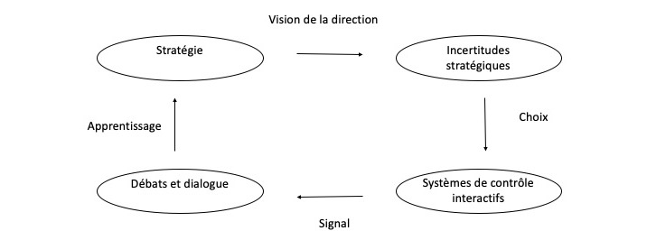
Figure 10: Le contrôle interactif
Tous les systèmes de contrôle et de mesure de la performance peuvent être utilisés de manière interactive : les budgets, les tableaux de bord, les indicateurs marketing, les outils de contrôle de gestion des projets, les indicateurs sur les ressources humaines, etc. Ce n'est donc pas l'outil en tant que tel qui compte pour comprendre l'impact du contrôle sur la stratégie, mais la manière de l'utiliser. En revanche, il ne peut y avoir trop de systèmes de contrôle et de mesure de la performance utilisés simultanément de manière interactive. En effet, ce type de contrôle a un coût économique et cognitif (les individus ne peuvent prêter attention à tout, ils ont une rationalité et une attention limitée). Se concentrer sur trop de systèmes de contrôle en même temps risque de conduire à un surplus d'informations, des analyses superficielles et une paralysie.
| Leviers de contrôle | Systèmes diagnostiques | Systèmes interactifs |
|---|---|---|
| Nature des systèmes | Systèmes de feedback utilisés pour surveiller les résultats et corriger les déviations par rapport aux standards de performance fixés au préalable. | Systèmes de contrôle que les managers utilisent pour s'impliquer régulièrement et personnellement dans la prise de décision des subordonnés |
| Objectif des systèmes | Fournir la motivation, les ressources et l'information pour s'assurer que les stratégies et les buts seront atteints | Faire converger l'attention organisationnelle sur les incertitudes stratégiques et provoquer l'émergence de nouvelles initiatives et stratégies |
| Créer une pression (mais risque d'effets pervers si les objectifs sont trop durs à atteindre). | Stimuler le dialogue et organiser l'apprentissage | |
| Variables clés | Variables de performance critique | Incertitudes stratégiques |
| But du système | Pas de surprise | Recherche créative |
Les outils de contrôle et de mesure de la performance peuvent donc être employés de manière diagnostique ou interactive. L'utilisation interactive des outils de contrôle va au-delà de la simple gestion par les résultats et peut faciliter des apprentissages organisationnels. Les entreprises performantes sont celles qui arrivent à articuler, en fonction de leur stratégie et des contraintes de leur environnement, les contrôles diagnostiques et interactifs afin de permettre le déploiement et l'émergence de stratégies et de compenser les effets pervers des systèmes de contrôle diagnostiques par une utilisation interactive d'autres outils de contrôle.
Exemple - L'utilisation interactive du budget43*
Une entreprise a décidé de réformer son système budgétaire afin de remplacer un système considéré comme rigide, bureaucratique et peu utile. Les changements s'apparentent à une utilisation interactive du budget. Ils ont notamment porté sur trois points. D'abord, la discussion budgétaire a été réorganisée pour favoriser la discussion entre des managers de divers niveaux ou de diverses fonctions (ingénieurs, financiers, etc.). Ensuite, l'accent a été mis sur son articulation avec les plans d'action ce qui permet une réflexion en amont sur les objectifs : "Avant les plans d'action étaient des emplâtres sur des jambes de bois. Je m'explique : on faisait le budget et quand tout était bouclé, on regardait quels plans d'action nous pouvions mettre en œuvre. Forcément, l'exercice était impossible" (Un directeur d'usine). Enfin, le budget est maintenant glissant et doit donner lieu à de multiples reprévisions, ce qui est là encore une occasion de discussion comme le souligne le chef de projet : "c'est l'occasion une fois par trimestre de discuter : le chef doit dialoguer, débattre et discuter les prévisions (et les résultats) […] Le nombre de niveaux hiérarchiques impliqué est de 3 ou 4 à partir de la DG entreprise. Ça veut dire qu'on arrive au niveau du chef d'atelier. Ce sont les opérationnels qui font les prévisions (20% restent traitées en central grâce à une modélisation). […] Le système permet de mettre face à face des gens ayant des points de vue différents pour faire les prévisions. » (Chef de projet Spring). Sans être parfait, le système a ainsi eu dans un certain nombre de cas, une dimension bénéfique comme le souligne un manager : "Ce système me permet chaque mois de me poser des questions sur mon activité et ses résultats. Il me permet de me comparer aux autres usines du groupe (en Pologne par exemple) et d'appeler le responsable de cette usine pour échanger avec lui sur nos problèmes communs. C'est un outil d'investigation fort utile." (Manager). Il conduit, d'une part, les managers à intégrer les préoccupations économiques dans leur raisonnement et, d'autre part, oblige les financiers à prendre en compte les contraintes opérationnelles dans la réalisation de leurs prévisions.
—
5.2.2 La diversité des modes de contrôle
Au-delà de la gestion par les résultats, divers modes de contrôle permettent de rendre prévisibles les comportements.
Ces modes de contrôle diffèrent selon le type d'organisation et les liens qu'elles ont avec les individus qui les composent44. Etzioni distingue ainsi trois types d'organisations : les entreprises (et, plus largement, les bureaucraties) qu'il nomme "organisations instrumentales", les institutions totalitaires (comme les prisons, les asiles) qui sont appelées "organisations coercitives" et les organisations idéologiques (tels les partis politiques, les églises) qui sont regroupées sous le terme "d'institutions normatives".
L'implication des membres de l'organisation est très différente dans ces trois types d'organisations :
- Dans les organisations coercitives, les buts des individus sont opposés à ceux de l'organisation et le contrôle qui y est exercé est de type coercitif : il vise à soumettre physiquement les personnes à l'organisation ;
- Dans les organisations normatives, les buts de l'organisation et ceux des individus qui la composent sont convergents, dans ce cadre, le contrôle porte sur la vision du monde que partagent les individus dans l'organisation ;
- Dans les organisations instrumentales, les buts des individus divergent de ceux de l'organisation, mais ne sont pas fondamentalement en opposition avec eux. Le contrôle porte donc sur les comportements et s'appuie sur la mise en place de systèmes d'incitation.
| Types d'organisation | Relations entre l'organisation et l'individu | Objets du contrôle | Prototype | Moyens de contrôle | Exemples en entreprise |
|---|---|---|---|---|---|
| Coercitive | Les buts des individus sont opposés à ceux de l'organisation | Entité physique | Prisons, asiles, esclavage | Coercition : force, menace, sanction | Licenciements, sanctions… |
| Instrumentale | Les buts des individus divergent de ceux de l'organisation | Comportement | Entreprises | Calcul, intérêt : incitations, règles | Rémunération, promotions |
| Normative | Les buts des individus convergent avec ceux de l'organisation | Vision du monde | Organisations politiques, religieuses, association caritative | Identification, socialisation et idéologie :persuasion, sens de l'appartenance | Propagande, communication |
Cette typologie nous permet de comprendre que les modes de contrôle à utiliser dépendent de la divergence d'intérêts qui peut exister entre l'organisation et les individus qui la composent. Elle montre aussi que, dans une certaine mesure, les entreprises utilisent non seulement des contrôles instrumentaux, mais également des modes de contrôle coercitifs (les licenciements, les sanctions) et normatifs (la propagande, la communication, la culture interne). Elle suggère, enfin, que le contrôle le plus efficace est celui qui n'est pas ressenti consciemment par les individus, c'est-à-dire le contrôle normatif. Agir sur les croyances et sur l'idéologie se révèle d'une grande force pour orienter les comportements (si certaines personnes sont prêtes à mourir pour des idées ou une religion, il est beaucoup plus rare de trouver des personnes prêtes à mourir pour des résultats).
Ouchi45 propose une typologie des modes de contrôle plus directement applicable au cas des organisations classiques. Il met en évidence trois modes de contrôle auxquels les organisations ont recours pour résoudre le problème de la divergence d'intérêts :
- Le contrôle par les résultats ou contrôle des outputs qui consiste à rendre les acteurs responsables et "comptables" de leurs résultats et implique de définir des objectifs et de savoir les mesurer par des données comptables ou non-comptables.
- Le contrôle par la bureaucratie qui porte sur les actions et les comportements des individus dans les organisations et a pour objectif de s'assurer que les individus réalisent des actions (des tâches) qui sont souhaitées par l'organisation, qu'ils œuvrent dans le sens prévu par l'organisation. Ce contrôle peut recourir à des contraintes physiques et administratives, mobiliser des procédures et/ou utiliser la supervision directe par la hiérarchie. Seront récompensés les individus qui agissent conformément aux règles. Ce type de contrôles nécessite que soient définies par une hiérarchie les règles à suivre et que l'on s'assure de leur bonne mise en œuvre. En outre, pour les entreprises dont l'environnement est extrêmement mouvant, ce contrôle est peu adapté puisque sa mise en œuvre nécessiterait de faire évoluer les règles fréquemment, au moins au rythme du changement de l'environnement. Néanmoins, le contrôle de type bureaucratique est très présent dans les organisations publiques, mais aussi largement mis en œuvre dans les grandes entreprises. À cet égard, les normes ISO (International Organization for Standardization), le contrôle interne ou encore l'audit introduisent et normalisent une forme de contrôle bureaucratique. Les contrôles de type bureaucratique peuvent servir de système garde-fou et permettre de délimiter ce qu'il est possible de faire et ce qui est interdit. Plutôt que de dire ce qu'il faut faire, ils permettent de laisser de la liberté en ne disant que ce qu'il ne faut pas faire. On peut les retrouver dans les chartes d'entreprise ou dans les codes éthiques, mais aussi dans les discours stratégiques.
- Le contrôle par le clan, les qualifications et la culture met l'accent sur l'importance de la confiance dans le personnel pour réaliser ce qui est le mieux pour l'organisation. On considère ici que contrôler c'est former les identités, les émotions, les pensées, les attitudes et les croyances : gagner les cœurs et les esprits. L'attention est alors portée sur ces éléments immatériels. Diverses tactiques permettent de mettre en œuvre ce type de contrôle : contrôle par le clan ou par les pairs (dans la mafia personne ne déroge au code de l'honneur, car chacun est sous la surveillance de ses pairs) ; contrôle par la standardisation des qualifications (embauche de personnes qui ont a priori les compétences pour assumer la mission qui leur est confiée du fait de leur formation initiale ou continue, c'est le cas par exemple des médecins, des ingénieurs, ou des comptables, mais aussi des gestionnaires dans certaines organisations pour lesquels une "certification" atteste de la conformité des valeurs et des comportements) ; contrôle par la culture, le sens de l'appartenance ou la socialisation qui peuvent permettre une forme d'endoctrinement aux valeurs et objectifs de l'organisation ; ou maîtrise des conditions affectives par les facteurs de satisfaction. Le contrôle repose alors sur des systèmes de croyances et s'appuie sur les valeurs fondamentales des membres de l'organisation. Ces valeurs définissent les principes, les objectifs et les responsabilités vis-à-vis des clients, des employés et des diverses parties prenantes. Ils s'inscrivent souvent dans la personnalité des fondateurs, mais lorsque l'entreprise croît il devient nécessaire de les communiquer de manière plus formelle. On peut les retrouver dans les "credo" ou "missions" communiquées par la direction.
| Contrôles | Mécanismes | Formes |
|---|---|---|
| Par la bureaucratie | Standardisation des règles et procédure (ex : codes de conduite), supervision directe | Contrôle des comportements |
| Par les objectifs | Incitations, mise en concurrence (marché) | Contrôle des résultats |
| Par les normes sociales | Engagement, surveillance des pairs, socialisation, qualifications, croyances et valeur | Contrôle des intrants / contrôle symbolique |
Ces différents modes de contrôle peuvent être mobilisés simultanément ou de façon séparée. Ils seront plus ou moins efficaces selon le contexte dans lequel ils prennent place46. Le contrôle par les résultats n'est pas toujours le mode de contrôle le plus efficace et dans certains environnements d'autres types de contrôle sont envisageables et même souhaitables.
Dans certains secteurs d’activité, la conformité à des normes de résultats peut être contre-productive et l’on peut davantage vouloir utiliser l’intuition, la créativité, l’ingéniosité des salariés pour trouver des solutions originales ou des processus inédits. On peut penser alors que la stratégie et la fixation d’objectifs se satisfont d’une navigation dans l’ambigu et que l’organisation doit favoriser cette ambiguïté pour permettre l’émergence de pratiques nouvelles. Les métiers créatifs sont évidemment les premiers concernés : des objectifs de résultats trop stricts peuvent aller à l’encontre de toute tentative d’innovation.
Différents critères doivent donc présider au choix des modes de contrôle à mettre en œuvre et notamment le niveau désiré d’innovation : un opérateur fortement encadré par des procédures et directement contrôlé par sa hiérarchie aura peu de capacité d’innovation. En indiquant aux agents ce qu’ils doivent faire et en s’assurant qu’ils le font, on limite leur capacité d’action et d’innovation. Éviter l’innovation permet souvent d’améliorer l’efficience, mais aussi de s’assurer de la qualité du produit ou du service et de la vitesse d’exécution des opérations. C’est pourquoi on laissera peu de capacité d’innovation à un employé de la restauration rapide ou à un ouvrier à la chaîne. On fait alors l’hypothèse que la hiérarchie a une meilleure connaissance de la bonne façon d’agir que les subordonnés. Pourtant, dans des environnements incertains ou en évolution constante, il faut savoir laisser une certaine capacité d’innovation et d’expérimentation aux subordonnés. Dans ce cas, il est préférable de favoriser un contrôle par les résultats à un contrôle des procédures en laissant les subordonnés libres d’envisager des manières de faire ou des produits qui n’avaient pas été pensés par la direction. Ils peuvent ainsi s’adapter à leurs marchés et à leurs clients. Des objectifs difficiles peuvent cependant rendre impossible toute recherche d’autres solutions et par la même toute innovation.
Parce qu'ils tentent de mettre sous pression les individus dans les organisations, les systèmes de contrôle interactifs et diagnostiques peuvent de plus conduire à des comportements déviants (manipulations comptables, fraudes, concurrence interne entre les responsables, etc.). Pour limiter ces risques, des contrôles administratifs ou culturels peuvent être mis en place. En résumé, quatre leviers de contrôle peuvent être utilisés dans les organisations47. Ces leviers de contrôle permettent de gérer des variables clés différentes (les facteurs clés de succès, les facteurs stratégiques de risque, les valeurs ou les risques à éviter).
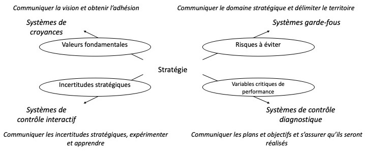
Figure 11: Les divers leviers de contrôle
Chacun de ces leviers de contrôle a des objectifs différents et permet de contrôler un élément particulier de la stratégie. Les entreprises performantes sont celles qui arrivent à articuler, en fonction de leur stratégie et des contraintes de leur environnement, les divers leviers de contrôle afin de compenser les effets pervers des uns et des autres.
Cela nécessite d'avoir une bonne compréhension des différents outils qui peuvent être utilisés. Ce cours a donné un aperçu des différents outils de calcul des coûts, de prévision et de mesure de la performance financière.
La comptabilité est un langage prédominant du domaine des affaires. Elle donne un grand pouvoir à ceux qui la maîtrisent. Elle permet d'améliorer la prise de décision et de faciliter le contrôle. Cependant, il ne faut pas forcément chercher à tout mesurer. Les effets pervers potentiels sont nombreux. De plus, la production de données comptables à un coût: le coût d’un calcul (de coût ou d'une mesure de performance) doit rester inférieur à son utilité.
Footnotes:
Les vidéos sont tirées de Tessier, S et Vézina, M. SC-102.5 - Décisions financières et gestion budgétaire. Edulib
Bhimani, A., Horngren, C. T., Datar, S. M., & Rajan, M. V. (2019). Management and cost accounting. Pearson.
Simon, H. A., Kozmetsky, G., Tyndall, G., & Simon, H. A. (1954). Centralization vs. Decentralization in organizing the controller’s department. [A research study and report prepared for Controllership Foundation, Inc.]. Controllership Foundation.
J. Maurice Clark, Studies in the Economics of Overhead Costs (University of Chicago Press, 1923), p. 175. Cité par H. Thomas Johnson et Robert S. Kaplan, dans Relevance lost, the Rise and Fall of Management Accounting, Harvard Business School Press, p. 155.
Cette valorisation va ensuite être utilisée par la comptabilité financière. Ainsi, même si la comptabilité de gestion n'est pas directement normalisée, les données qu'elle produit pour valoriser le coût des stocks et produits en cours sont tout de même encadrées par les normes comptables.
On distingue deux types de centres de regroupements : les centres principaux (qui assument une fonction directement opérationnelle) et les centres de support (qui travaillent pour d'autres centres, par exemple le service d'entretien ou le service comptable). Il est nécessaire de répartir les ressources consommées par les centres de support dans les centres principaux en fonction de leur consommation. Cela implique de trouver une base d'imputation qui permet d'affecter ces centres dans les centres principaux. Par exemple, les coûts du service de ressources humaines peuvent être refacturés aux autres centres sur la base du nombre de salariés dans chacun de ces centres (ou de leur masse salariale). Autre exemple, les coûts du service de maintenance informatique sont répartis aux autres centres en fonction du nombre de postes informatique au sein de chacun de ces centres. Cette difficulté technique supplémentaire dépasse le cadre de ce cours.
Bouquin, H (2011), Comptabilité de gestion, éditions économica.
Burlaud A. et Simon C. (2003), Comptabilité de gestion, Vuibert Gestion, p. 15.
Johnson, H. T., & Kaplan, R. S. (1987). Relevance lost : The rise and fall of management accounting. Harvard Business School Press. (voir auss Miller, J. G., & Vollmann, T. E. (1985). The hidden factory. Harvard Business Review, 63(5), 142‑150.)
Porter, M. E. (1985). Competitive advantage : Creating and sustaining superior performance. The Free Press.
Par exemple, la formule de Wilson
Anthony, R.N. (1988), The management control function, The Harvard Business School Press, Boston (Trad. La fonction contrôle de gestion), Paris, Publi-Union, 1993.
Barrett, M.E. & Fraser, L.B. (1977), Conflicting Roles in Budgeting for Operations, Harvard Business Review, juillet-août, p. 136-147.
Argyris C. (1953), Human problems with budgets, Harvard Business Review, vol. 31, n° 1, p. 97-110.
Hansen, S.C., Otley, D. & Van der Stede, W.A. (2003), Practice developments in budgeting : an overview and research perspective, Journal of Management Accounting Research, vol. 15, p. 95-116.
Hope, J. & Fraser, R. (2003), Who needs budget ?, Harvard Business Review, février, p. 108-115.
Jensen, M.C. (2001), Corporate Budgeting Is Broken - Let's Fix It, Harvard Business Review, vol. 79, n° 11, novembre, p. 94-101.
Sponem, S., & Lambert, C. (2016), Exploring differences in budget characteristics, roles and satisfaction : A configurational approach. Management Accounting Research, 30, 47‑61.
Ce mode de gestion a été popularisé par Peter Drucker, l'un des grands "gourous" du management au 20ème siècle sous le de Management by objectives
Hofstede, G. (1978). The Poverty of Management Control Philosophy. The Academy of Management Review, 3(3), 450‑461.
Sloan, A. P. (1963). My years with General Motors. Doubleday.
Drucker, P. F. (1954). The practice of management. Harper & Row.
McGregor, D. M. (1957). The Human Side of Enterprise. Management Review, 46(11), 22‑28.
Maslow, A. H. (1968). Toward a psychology of being. D. Van Nostrand Company.
Porter, L. W., & Lawler, E. E. (1968). Managerial attitudes and performance. R.D. Irwin.
Merchant, K. A., & Manzoni, J.-F. (1989). The Achievability of Budget Targets in Profit Centers : A Field Study. The Accounting Review, 64(3), 539‑558.
Ce principe soulève cependant un certain nombre de questions lors de sa mise en œuvre. D'abord, comment neutraliser les externalités (impact d’événements imprévisibles et incontrôlables tels que l’évolution des taux de change, les dispositions légales ou réglementaires ; impact des décisions prises par d’autres acteurs de l’organisation et qui s’imposent au manager évalué…) afin que l’évaluation des performances des managers n’en soit pas affectée ? Ensuite, comment neutraliser les effets des décisions prises par d’autres entités de l’organisation ? Enfin, comment promouvoir la coordination et la coopération tout en favorisant une conception individuelle de la responsabilité ? Est-il réellement possible et souhaitable de respecter ce principe pour les managers les plus hauts placés dans la hiérarchie ? Leur rôle n’est-il pas justement d’anticiper ce qui pourrait advenir à l’organisation du fait de l’évolution de l’environnement ?
Le ROI (Return On Investment - retour sur investissement) est une innovation organisationnelle majeure de General Motors dans les années 1920. Il a permis de contrôler des divisions à distance et très diverses, et a ainsi rendu possible l'émergence de très grandes organisations mondialisées au cours du 20e siècle. Sloan (le directeur général de General Motors à cette époque) appelait cette mesure "le mètre étalon de la performance".
Bouquin, H (2010), Le contrôle de gestion, PUF, 8ᵉ édition.
Le bénéfice résiduel a été utilisé par la General Electric dès les années 1950. Au cours des années 1990, Stern et Steward ont développé l'Economic Value Added (EVA), qui est une forme modernisée de bénéfice résiduel et qui a connu un certain succès dans les entreprises.
Lorsque la cession se produit entre deux entités juridiques différentes, par exemple entre deux filiales au sein d’un groupe, cela a des conséquences financières et fiscales. Ainsi, dans les groupes internationaux, on peut utiliser les prix de transfert pour déplacer des fonds d’une société à l’autre (pour financer indirectement une filiale, ou "rapatrier" des profits de façon occulte) ; minimiser les taxes fiscales ou les droits de douane, et faire de l’optimisation fiscale en faisant apparaître des bénéfices là où l’imposition est la plus faible ; contourner des quotas d’importation ou d’exportation ; ou minimiser certains risques de change. C’est pourquoi la plupart des pays ont édicté des règles pour limiter les manipulations des prix de transfert, qui en fait constituent souvent des fraudes.
Pour être exact, il peut tout de même avoir une incidence sur le court terme lorsque que des stocks sont constitués.
Eccles, R. G. (1983). Control with Fairness in Transfer Pricing. Harvard Business Review, November 1983. https://hbr.org/1983/11/control-with-fairness-in-transfer-pricing
Anthony, R. N., Govindarajan, V., Hartmann, F. G. H., Kraus, K., & Nilson, G. (2014). Management control systems (1st european edition). McGraw Hill Higher Education.
Cette section reprend en partie Sponem, S., & Chatelain-Ponroy, S. (2019). Les comportements face au contrôle. In N. Berland & Y. De Rongé (Éds.), Contrôle de gestion : Perspectives stratégiques et managériales (4 éd., p. 73‑94). Pearson.
Les travaux d’Argyris s’inscrivent dans le courant des relations humaines et appliquent au contrôle de gestion les résultats des travaux de cette école. Argyris, C. (1953). Human Problems with Budgets. Harvard Business Review, 31(1), 97‑110.
Extrait de Berry, M. (1983). Une technologie invisible ? Impact des instruments de gestion sur l’évolution des systèmes humains. Ecole Polytechnique, p.12-13.
Jensen, M. C. (2001), Corporate budgeting is broken—let's fix it. Harvard Business Review 79 (11): 94-101.
Deci, E. L., & Ryan, R. M. (1985), Intrinsic motivation and self-determination in human behavior. Perspectives in social psychology. New York: Plenum.
Tiré de Lambert, C., Sponem, S. (2005), Corporate governance and profit manipulation: A french field study. Critical Perspectives on Accounting 16 (6): 717-748
Flamholtz, E. G., Das, T. K. & Tsui, A. S. (1985), "Toward an integrative framework of organizational control", Accounting, Organizations and Society, vol. 10, n° 1, p. 35-50.
Simons, R. (1995), Levers of control: How managers use innovative control systems to drive strategic renewal, Boston Massachusetts, Harvard Business School Press.
Tiré de Berland, N., Curtis, E., & Sponem, S. (2018). Exposing organizational tensions with a non-traditional budgeting system. Journal of Applied Accounting Research, 19(1), 122‑140.
Etzioni, A. (1961), A comparative analysis of complex organizations, New York, Free Press.
Adapté de Ouchi, W. (1979), "A conceptual framework for the design of organizational control mechanisms", Management Science, vol. 25, n° 9, p. 833-848.
Merchant, K. A., & Van der Stede, W. A. (2017). Management control systems : Performance measurement, evaluation and incentives.
Simons, R. (2000), Performance measurement and control systems for implementing strategy - Text and cases, Prentice Hall.